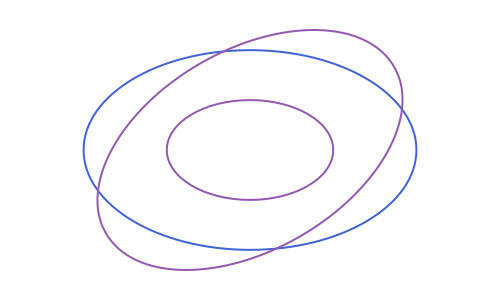

Conics: Ellipse, Parabola & Hyperbola
Three separate types (APEllipse2, APParabola2 and APHyperbola2) each aligned with a coordinate axis of its own (center/angle for the first two, focus/directrix for the parabola), plus a fifth constructor, conic_through_points, that fits an ellipse or hyperbola through five arbitrary points.
All three conic types share the same shape of API, since they share the same underlying pattern (a curve defined by an equation in its own local frame, plus a point/line duality): point_on_*, is_on_*, intersection with an APLine, polar_line, tangent_points and tangent_lines all exist for each of the three, with the same meaning throughout. That shared behavior is described once, in Points, tangents and duality, rather than three times.
Ellipse
using Apollonius
e = APEllipse2(APPoint(0.0, 0.0), 5.0, 3.0) # center, semi-axis a, semi-axis bAPEllipse2(center=[0.0, 0.0], a=5.0, b=3.0, angle=0.0)APEllipse2(center, a, b, angle=0.0) places semi-axis a along angle (radians from the x-axis) and semi-axis b perpendicular to it; a and b don't need to be ordered; either can be the longer one. There is also the classical bifocal constructor:
APEllipse2(APPoint(-4.0, 0.0), APPoint(4.0, 0.0), 5.0) # foci + semi-major axis aAPEllipse2(center=[0.0, 0.0], a=5.0, b=3.0, angle=0.0)which throws an ArgumentError if a isn't greater than half the distance between the foci (otherwise no real ellipse has that focal distance and semi-major axis). A third form, APEllipse2(f1, f2, p), builds the ellipse through a known point p instead of a known a, computing a from the bifocal sum (|pf1| + |pf2|)/2 first.
area(e) # π·a·b
perimeter(e) # Ramanujan's 2nd approximation (exact when a == b)
foci(e) # the two focus points, as a 2-tuple
vertices(e) # the two endpoints of the major axis, as a 2-tuple([5.0, 0.0], [-5.0, 0.0])is_on_ellipse(APPoint(5.0, 0.0), e) # true: exactly at the end of the major axis
is_on_ellipse(APPoint(1.0, 1.0), e) # false: strictly insidefalseorthoptic is the director circle: the locus of points from which the two tangent lines to e are perpendicular. For an ellipse it's always a real circle, of radius sqrt(a² + b²), centered at e.center.
orthoptic(e) # APCircle2(center, sqrt(5^2+3^2)) ≈ APCircle2(center, 5.83)APCircle2([0.0, 0.0], 5.830951894845301)
Parabola
focus = APPoint(0.0, 1.0)
directrix = APLine(APPoint(-5.0, -1.0), APPoint(5.0, -1.0))
par = APParabola2(focus, directrix)APParabola2(focus=[0.0, 1.0], directrix=APLine([-5.0, -1.0] -> [5.0, -1.0]))vertex(par) # midpoint of focus and its foot on the directrix
vertices(par) # (vertex(par),): a 1-tuple, so vertices() works uniformly across every conic
focal_parameter(par) # distance(focus, directrix), often called p2.0APParabola2(vertex, focus) is the point-based alternative, the same idea as APCircle2(center, through) or the bifocal APEllipse2/APHyperbola2 constructors: vertex and focus alone pin down the axis, the focal parameter, and so the directrix too.
APParabola2(vertex(par), focus) ≈ partruepoint_on_parabola parametrizes by the signed distance s from the axis (so it's the local y-coordinate in the frame where the parabola reads y² = 2·p·x, with s = 0 at the vertex):
point_on_parabola(par, 2.0)[-2.0, 1.0]is_on_parabola(point_on_parabola(par, 2.0), par) # true, by constructiontrueThe parabola's own orthoptic (director curve) turns out to be exactly its directrix, a fact special to the parabola (the ellipse's and hyperbola's orthoptics are circles, not lines):
orthoptic(par) == par.directrixtrue
Hyperbola
h = APHyperbola2(APPoint(0.0, 0.0), 3.0, 4.0) # center, transverse a, conjugate bAPHyperbola2(center=[0.0, 0.0], a=3.0, b=4.0, angle=0.0)APHyperbola2(center, a, b, angle=0.0) reads (x/a)² - (y/b)² = 1 in the rotated local frame: a is the semi-transverse axis (along angle, the one that actually meets the curve) and b the semi-conjugate axis (which doesn't). The bifocal constructor mirrors the ellipse's:
APHyperbola2(APPoint(-5.0, 0.0), APPoint(5.0, 0.0), 3.0) # foci + semi-transverse axis aAPHyperbola2(center=[0.0, 0.0], a=3.0, b=4.0, angle=0.0)throwing instead when a isn't less than half the focal distance (the opposite inequality from the ellipse, since here c > a).
foci(h) # the two foci, at distance sqrt(a²+b²) from the center
asymptotes(h) # the two asymptote lines, through the center
vertices(h) # the two points where each branch meets the transverse axis, at distance a from the center([3.0, 0.0], [-3.0, 0.0])
orthoptic (the director circle) exists for a hyperbola only when a > b, with radius sqrt(a² - b²); otherwise there's no point in the plane from which both tangents can be perpendicular, and it throws an ArgumentError:
orthoptic(APHyperbola2(APPoint(0.0, 0.0), 5.0, 3.0)) # a > b: APCircle2 of radius sqrt(25-9) = 4APCircle2([0.0, 0.0], 4.0)point_on_hyperbola parametrizes one branch at a time (branch=1, the default, or branch=-1 for the other) using the hyperbolic functions: x = branch·a·cosh(t), y = b·sinh(t).
point_on_hyperbola(h, 0.5) # on the branch nearer +x
point_on_hyperbola(h, 0.5; branch=-1) # the mirrored point on the other branch[-3.382877895619142, 2.0843812219749895]is_on_hyperbola(point_on_hyperbola(h, 0.5), h) # true, on either branchtruep in h (via Base.in) is the natural analogue of "inside" for a curve that doesn't bound a single finite region: it's true when p is on h itself or beyond either branch ((x/a)² - (y/b)² >= 1 in the local frame), i.e. on the same side as the curve, rather than in the "waist" between the two branches.
Building a conic from other data
Besides the constructors above, four functions build a conic from the data one often has.
A focus, a directrix and an eccentricity. conic_with_focus(focus, directrix, e) is the set of points whose distance to the focus is e times their distance to the directrix. The eccentricity decides the type:
e | Result |
|---|---|
0 < e < 1 | an APEllipse2 |
e = 1 | an APParabola2 |
e > 1 | an APHyperbola2 |
fc, dc = APPoint(0.0, 0.0), APLine(APPoint(4.0, -1.0), APPoint(4.0, 1.0))
typeof(conic_with_focus(fc, dc, 0.5)), typeof(conic_with_focus(fc, dc, 1.0)), typeof(conic_with_focus(fc, dc, 2.0))(APEllipse2{Float64}, APParabola2{Float64}, APHyperbola2{Float64})
An ellipse from a center, a vertex and a point. ellipse_with_axis(center, vertex, p) has the segment from the center to the vertex as a semi-axis, and passes through p. The point must be off the axis and inside the strip of the tangents at the ends of the axis.
ea = ellipse_with_axis(APPoint(0.0, 0.0), APPoint(5.0, 0.0), APPoint(3.0, 2.4))
ea.a, ea.b(5.0, 2.9999999999999996)
A hyperbola from its asymptotes. hyperbola_with_asymptotes(l1, l2, p) has the two lines as asymptotes and passes through p. Its center is where the lines cross, and its transverse axis is the bisector that lies in the angle containing p.
ha = hyperbola_with_asymptotes(APLine(APPoint(0.0, 0.0), APPoint(1.0, 1.0)), APLine(APPoint(0.0, 0.0), APPoint(1.0, -1.0)), APPoint(2.0, 0.0))
ha.a, ha.b(2.0, 2.0000000000000004)
A parabola from three points and an axis. parabola_through_points(p1, p2, p3, axis) is the parabola whose axis has the direction axis and that goes through the three points. It throws an ArgumentError when none exists.
pt3 = parabola_through_points(APPoint(-2.0, 4.0), APPoint(0.0, 0.0), APPoint(1.0, 1.0), APVector(0.0, 1.0))
pt3.focus[0.0, 0.25]
Points, tangents and duality
The following table applies to all three types (write conic for whichever of APEllipse2, APParabola2 or APHyperbola2 you're using):
| Function | Meaning |
|---|---|
point_on_conic(conic, param) | a point on the curve at the given parameter |
is_on_conic(p, conic) | is p exactly on the curve? |
intersection(l, conic) | 0, 1 or 2 points where an APLine/APSegment/APRay crosses the curve |
polar_line(conic, p) | the polar line of p (see below) |
tangent_points(conic, p) | the point(s) of tangency of the line(s) from p |
tangent_lines(conic, p) | the tangent line(s) themselves |
intersection reduces APSegment/APRay to the underlying APLine case and then keeps only the points that actually fall on the segment/ray, so a segment that stops short of the curve correctly returns nothing, and a ray only ever reports points ahead of its origin:
intersection(APSegment(APPoint(-10.0, 0.0), APPoint(0.0, 0.0)), e) # reaches the near vertex
intersection(APRay(APPoint(0.0, 0.0), APPoint(1.0, 0.0)), e) # the far vertex, not the near one1-element Vector{APPoint{2, Float64}}:
[4.999999999999999, 0.0]The polar line of a point p with respect to a conic is the projective-duality construction that makes all of tangent_points and tangent_lines work uniformly, for every conic (including APCircle2, see Circles):
- When
pis outside the curve, its polar is the chord joining the two points where the tangent lines fromptouch the curve, sotangent_pointsis implemented as simplyintersection(polar_line(conic, p), conic). - When
pis on the curve, its polar line degenerates to the tangent line atpitself, which is exactly whytangent_linesspecial-cases that situation, rather than returning the degenerateAPLine(p, p)a naive "joinpto its own tangent point" would give. polar_linereturnsnothingat the one truly degenerate input:pbeing the ellipse/hyperbola's center (an ellipse's or hyperbola's polar of its own center would be the line at infinity), or the parabola's focus sitting on its own directrix (a degenerate parabola, not a real curve at all).
p = APPoint(13.0, 0.0)
tangent_points(e, p)
tangent_lines(e, p)2-element Vector{APLine{2, Float64}}:
APLine([13.0, 0.0] -> [1.923076923076923, 2.7692307692307687])
APLine([13.0, 0.0] -> [1.923076923076923, -2.7692307692307687])
For an APHyperbola2 specifically, note that being far from the curve doesn't guarantee real tangents (or the lack of them) the way it does for an ellipse. It depends on which side of which branch p sits on; tangent_points/tangent_lines still return an empty vector rather than erroring when there are none.
Intersecting two conics
intersection also works between two full conics of any kind, straight or mixed (an ellipse against a hyperbola, two different ellipses, a circle against a parabola, ...), returning up to 4 real points:
intersection(e, h)4-element Vector{APPoint{2, Float64}}:
[3.419705644406519, -2.1886116124203285]
[-3.419705644406519, -2.1886116124203285]
[3.419705644406516, 2.18861161242033]
[-3.419705644406516, 2.18861161242033]
Two circles are the one pairing with its own dedicated, exact method (finding two circles' intersection reduces to a single quadratic); every other pairing goes through a general elimination method instead, since two conics can meet in up to 4 points, one degree too many for that shortcut. Both give a Vector{APPoint{2,Float64}}, so nothing about calling intersection changes based on which two types you hand it.
The tangent and the normal at a point
tangent_line(curve, p) is the tangent to a circle, an ellipse, a hyperbola, a parabola or an arc of any of them at its point p, and normal_line the perpendicular to it through p. The point must be on the curve (or on the arc), or an ArgumentError is raised. They are the same tangent as polar_line gives for a point of the conic, in one function for every curve:
ec = APEllipse2(APPoint(0.0, 0.0), 5.0, 3.0)
pc = point_on_ellipse(ec, 1.0)
tangent_line(ec, pc) ≈ polar_line(ec, pc), on_line(pc, normal_line(ec, pc))(true, true)Conic constructions step by step
The blocks in this section are run when the documentation is built, and each figure comes from the code above it; only the geometry is shown. The figures use one color code: blue for the given objects, green for the construction aids, purple for what is found. In each part, the first block builds the objects inside @to_luxor_picture, which fits them to the canvas and returns the fitted objects in lxo, under the names they were given. The answer is built there too, so that the canvas has room for every step, and each step then rebuilds its part of it from the given objects. A curve that goes on forever is marked @unbounded, and an arc of it is drawn in its place.
An ellipse from the sum of distances
An ellipse is the set of points whose distances to the two foci add up to a constant, 2a. To find such a point, pick a radius r, and draw the circle of radius r around one focus and the circle of radius 2a - r around the other. They cross at points of the ellipse.
lxm, lxo = @to_luxor_picture width=500 margin=30 begin
ef1 = APPoint(-3.0, 0.0)
ef2 = APPoint(3.0, 0.0)
eell = APEllipse2(ef1, ef2, 5.0)
end
(; ef1, ef2, eell) = lxoStep 1. The two foci, and the sum of distances 2a.
ea = eell.a
distance(ef1, ef2) < 2eatrue![](data:image/svg+xml;utf-8,<?xml version="1.0" encoding="UTF-8"?>
<svg xmlns="http://www.w3.org/2000/svg" xmlns:xlink="http://www.w3.org/1999/xlink" width="500" height="412" viewBox="0 0 500 412">
<defs>
<g>
<g id="glyph-175176-0-0">
<path d="M 1.46875 -10.9375 L 7.75 -10.9375 L 7.75 -9.6875 L 2.953125 -9.6875 L 2.953125 -6.46875 L 7.28125 -6.46875 L 7.28125 -5.21875 L 2.953125 -5.21875 L 2.953125 0 L 1.46875 0 Z M 1.46875 -10.9375 "/>
</g>
<g id="glyph-175176-0-1">
<path d="M 1.859375 -1.25 L 4.28125 -1.25 L 4.28125 -9.59375 L 1.640625 -9.0625 L 1.640625 -10.40625 L 4.265625 -10.9375 L 5.75 -10.9375 L 5.75 -1.25 L 8.15625 -1.25 L 8.15625 0 L 1.859375 0 Z M 1.859375 -1.25 "/>
</g>
<g id="glyph-175176-0-2">
<path d="M 2.875 -1.25 L 8.046875 -1.25 L 8.046875 0 L 1.09375 0 L 1.09375 -1.25 C 1.65625 -1.820312 2.421875 -2.597656 3.390625 -3.578125 C 4.359375 -4.554688 4.96875 -5.191406 5.21875 -5.484375 C 5.695312 -6.015625 6.03125 -6.460938 6.21875 -6.828125 C 6.40625 -7.203125 6.5 -7.566406 6.5 -7.921875 C 6.5 -8.503906 6.296875 -8.976562 5.890625 -9.34375 C 5.484375 -9.707031 4.953125 -9.890625 4.296875 -9.890625 C 3.828125 -9.890625 3.332031 -9.804688 2.8125 -9.640625 C 2.300781 -9.484375 1.753906 -9.238281 1.171875 -8.90625 L 1.171875 -10.40625 C 1.765625 -10.644531 2.320312 -10.828125 2.84375 -10.953125 C 3.363281 -11.078125 3.835938 -11.140625 4.265625 -11.140625 C 5.398438 -11.140625 6.300781 -10.851562 6.96875 -10.28125 C 7.644531 -9.71875 7.984375 -8.960938 7.984375 -8.015625 C 7.984375 -7.566406 7.898438 -7.140625 7.734375 -6.734375 C 7.566406 -6.328125 7.257812 -5.851562 6.8125 -5.3125 C 6.6875 -5.164062 6.296875 -4.753906 5.640625 -4.078125 C 4.992188 -3.398438 4.070312 -2.457031 2.875 -1.25 Z M 2.875 -1.25 "/>
</g>
</g>
</defs>
<g fill="rgb(79.6%25, 23.5%25, 20%25)" fill-opacity="1">
<use xlink:href="%23glyph-175176-0-0" x="108.914307" y="221.935059"/>
<use xlink:href="%23glyph-175176-0-1" x="117.542236" y="221.935059"/>
</g>
<g fill="rgb(79.6%25, 23.5%25, 20%25)" fill-opacity="1">
<use xlink:href="%23glyph-175176-0-0" x="372.914307" y="222.132812"/>
<use xlink:href="%23glyph-175176-0-2" x="381.542236" y="222.132812"/>
</g>
<path fill-rule="nonzero" fill="rgb(100%25, 100%25, 100%25)" fill-opacity="1" stroke-width="2" stroke-linecap="butt" stroke-linejoin="miter" stroke="rgb(25.1%25, 38.8%25, 84.7%25)" stroke-opacity="1" stroke-miterlimit="10" d="M 121 206 C 121 207.65625 119.65625 209 118 209 C 116.34375 209 115 207.65625 115 206 C 115 204.34375 116.34375 203 118 203 C 119.65625 203 121 204.34375 121 206 Z M 385 206 C 385 207.65625 383.65625 209 382 209 C 380.34375 209 379 207.65625 379 206 C 379 204.34375 380.34375 203 382 203 C 383.65625 203 385 204.34375 385 206 Z M 385 206 "/>
</svg>)
Step 2. A radius r between a - c and a + c, and the two circles of radius r and 2a - r.
er = 0.6 * ea
ek1, ek2 = APCircle2(ef1, er), APCircle2(ef2, 2ea - er)
ep = intersection(ek1, ek2)
all(p -> distance(p, ef1) + distance(p, ef2) ≈ 2ea, ep)true![](data:image/svg+xml;utf-8,<?xml version="1.0" encoding="UTF-8"?>
<svg xmlns="http://www.w3.org/2000/svg" xmlns:xlink="http://www.w3.org/1999/xlink" width="500" height="412" viewBox="0 0 500 412">
<defs>
<g>
<g id="glyph-692577-0-0">
<path d="M 1.46875 -10.9375 L 7.75 -10.9375 L 7.75 -9.6875 L 2.953125 -9.6875 L 2.953125 -6.46875 L 7.28125 -6.46875 L 7.28125 -5.21875 L 2.953125 -5.21875 L 2.953125 0 L 1.46875 0 Z M 1.46875 -10.9375 "/>
</g>
<g id="glyph-692577-0-1">
<path d="M 1.859375 -1.25 L 4.28125 -1.25 L 4.28125 -9.59375 L 1.640625 -9.0625 L 1.640625 -10.40625 L 4.265625 -10.9375 L 5.75 -10.9375 L 5.75 -1.25 L 8.15625 -1.25 L 8.15625 0 L 1.859375 0 Z M 1.859375 -1.25 "/>
</g>
<g id="glyph-692577-0-2">
<path d="M 2.875 -1.25 L 8.046875 -1.25 L 8.046875 0 L 1.09375 0 L 1.09375 -1.25 C 1.65625 -1.820312 2.421875 -2.597656 3.390625 -3.578125 C 4.359375 -4.554688 4.96875 -5.191406 5.21875 -5.484375 C 5.695312 -6.015625 6.03125 -6.460938 6.21875 -6.828125 C 6.40625 -7.203125 6.5 -7.566406 6.5 -7.921875 C 6.5 -8.503906 6.296875 -8.976562 5.890625 -9.34375 C 5.484375 -9.707031 4.953125 -9.890625 4.296875 -9.890625 C 3.828125 -9.890625 3.332031 -9.804688 2.8125 -9.640625 C 2.300781 -9.484375 1.753906 -9.238281 1.171875 -8.90625 L 1.171875 -10.40625 C 1.765625 -10.644531 2.320312 -10.828125 2.84375 -10.953125 C 3.363281 -11.078125 3.835938 -11.140625 4.265625 -11.140625 C 5.398438 -11.140625 6.300781 -10.851562 6.96875 -10.28125 C 7.644531 -9.71875 7.984375 -8.960938 7.984375 -8.015625 C 7.984375 -7.566406 7.898438 -7.140625 7.734375 -6.734375 C 7.566406 -6.328125 7.257812 -5.851562 6.8125 -5.3125 C 6.6875 -5.164062 6.296875 -4.753906 5.640625 -4.078125 C 4.992188 -3.398438 4.070312 -2.457031 2.875 -1.25 Z M 2.875 -1.25 "/>
</g>
</g>
</defs>
<path fill="none" stroke-width="1" stroke-linecap="butt" stroke-linejoin="miter" stroke="rgb(80%25, 80%25, 80%25)" stroke-opacity="1" stroke-dasharray="4 4" stroke-miterlimit="10" d="M 250 206 C 250 278.902344 190.902344 338 118 338 C 45.097656 338 -14 278.902344 -14 206 C -14 133.097656 45.097656 74 118 74 C 190.902344 74 250 133.097656 250 206 Z M 250 206 "/>
<path fill="none" stroke-width="1" stroke-linecap="butt" stroke-linejoin="miter" stroke="rgb(80%25, 80%25, 80%25)" stroke-opacity="1" stroke-dasharray="4 4" stroke-miterlimit="10" d="M 690 206 C 690 376.105469 552.105469 514 382 514 C 211.894531 514 74 376.105469 74 206 C 74 35.894531 211.894531 -102 382 -102 C 552.105469 -102 690 35.894531 690 206 Z M 690 206 "/>
<g fill="rgb(79.6%25, 23.5%25, 20%25)" fill-opacity="1">
<use xlink:href="%23glyph-692577-0-0" x="108.914307" y="221.935059"/>
<use xlink:href="%23glyph-692577-0-1" x="117.542236" y="221.935059"/>
</g>
<g fill="rgb(79.6%25, 23.5%25, 20%25)" fill-opacity="1">
<use xlink:href="%23glyph-692577-0-0" x="372.914307" y="222.132812"/>
<use xlink:href="%23glyph-692577-0-2" x="381.542236" y="222.132812"/>
</g>
<path fill-rule="nonzero" fill="rgb(100%25, 100%25, 100%25)" fill-opacity="1" stroke-width="2" stroke-linecap="butt" stroke-linejoin="miter" stroke="rgb(25.1%25, 38.8%25, 84.7%25)" stroke-opacity="1" stroke-miterlimit="10" d="M 121 206 C 121 207.65625 119.65625 209 118 209 C 116.34375 209 115 207.65625 115 206 C 115 204.34375 116.34375 203 118 203 C 119.65625 203 121 204.34375 121 206 Z M 385 206 C 385 207.65625 383.65625 209 382 209 C 380.34375 209 379 207.65625 379 206 C 379 204.34375 380.34375 203 382 203 C 383.65625 203 385 204.34375 385 206 Z M 385 206 "/>
<path fill-rule="nonzero" fill="rgb(100%25, 100%25, 100%25)" fill-opacity="1" stroke-width="2" stroke-linecap="butt" stroke-linejoin="miter" stroke="rgb(58.4%25, 34.5%25, 69.8%25)" stroke-opacity="1" stroke-miterlimit="10" d="M 106.332031 337.183594 C 106.332031 338.839844 104.988281 340.183594 103.332031 340.183594 C 101.675781 340.183594 100.332031 338.839844 100.332031 337.183594 C 100.332031 335.527344 101.675781 334.183594 103.332031 334.183594 C 104.988281 334.183594 106.332031 335.527344 106.332031 337.183594 Z M 106.332031 74.816406 C 106.332031 76.472656 104.988281 77.816406 103.332031 77.816406 C 101.675781 77.816406 100.332031 76.472656 100.332031 74.816406 C 100.332031 73.160156 101.675781 71.816406 103.332031 71.816406 C 104.988281 71.816406 106.332031 73.160156 106.332031 74.816406 Z M 106.332031 74.816406 "/>
</svg>)
Step 3. The same with other radii. Each pair of circles gives two more points.
epall = reduce(vcat, [intersection(APCircle2(ef1, s * ea), APCircle2(ef2, (2 - s) * ea)) for s in (0.45, 0.6, 0.8, 1.0, 1.2, 1.4, 1.55)])
length(epall)14![](data:image/svg+xml;utf-8,<?xml version="1.0" encoding="UTF-8"?>
<svg xmlns="http://www.w3.org/2000/svg" xmlns:xlink="http://www.w3.org/1999/xlink" width="500" height="412" viewBox="0 0 500 412">
<defs>
<g>
<g id="glyph-314945-0-0">
<path d="M 1.46875 -10.9375 L 7.75 -10.9375 L 7.75 -9.6875 L 2.953125 -9.6875 L 2.953125 -6.46875 L 7.28125 -6.46875 L 7.28125 -5.21875 L 2.953125 -5.21875 L 2.953125 0 L 1.46875 0 Z M 1.46875 -10.9375 "/>
</g>
<g id="glyph-314945-0-1">
<path d="M 1.859375 -1.25 L 4.28125 -1.25 L 4.28125 -9.59375 L 1.640625 -9.0625 L 1.640625 -10.40625 L 4.265625 -10.9375 L 5.75 -10.9375 L 5.75 -1.25 L 8.15625 -1.25 L 8.15625 0 L 1.859375 0 Z M 1.859375 -1.25 "/>
</g>
<g id="glyph-314945-0-2">
<path d="M 2.875 -1.25 L 8.046875 -1.25 L 8.046875 0 L 1.09375 0 L 1.09375 -1.25 C 1.65625 -1.820312 2.421875 -2.597656 3.390625 -3.578125 C 4.359375 -4.554688 4.96875 -5.191406 5.21875 -5.484375 C 5.695312 -6.015625 6.03125 -6.460938 6.21875 -6.828125 C 6.40625 -7.203125 6.5 -7.566406 6.5 -7.921875 C 6.5 -8.503906 6.296875 -8.976562 5.890625 -9.34375 C 5.484375 -9.707031 4.953125 -9.890625 4.296875 -9.890625 C 3.828125 -9.890625 3.332031 -9.804688 2.8125 -9.640625 C 2.300781 -9.484375 1.753906 -9.238281 1.171875 -8.90625 L 1.171875 -10.40625 C 1.765625 -10.644531 2.320312 -10.828125 2.84375 -10.953125 C 3.363281 -11.078125 3.835938 -11.140625 4.265625 -11.140625 C 5.398438 -11.140625 6.300781 -10.851562 6.96875 -10.28125 C 7.644531 -9.71875 7.984375 -8.960938 7.984375 -8.015625 C 7.984375 -7.566406 7.898438 -7.140625 7.734375 -6.734375 C 7.566406 -6.328125 7.257812 -5.851562 6.8125 -5.3125 C 6.6875 -5.164062 6.296875 -4.753906 5.640625 -4.078125 C 4.992188 -3.398438 4.070312 -2.457031 2.875 -1.25 Z M 2.875 -1.25 "/>
</g>
</g>
</defs>
<g fill="rgb(79.6%25, 23.5%25, 20%25)" fill-opacity="1">
<use xlink:href="%23glyph-314945-0-0" x="108.914307" y="221.935059"/>
<use xlink:href="%23glyph-314945-0-1" x="117.542236" y="221.935059"/>
</g>
<g fill="rgb(79.6%25, 23.5%25, 20%25)" fill-opacity="1">
<use xlink:href="%23glyph-314945-0-0" x="372.914307" y="222.132812"/>
<use xlink:href="%23glyph-314945-0-2" x="381.542236" y="222.132812"/>
</g>
<path fill-rule="nonzero" fill="rgb(100%25, 100%25, 100%25)" fill-opacity="1" stroke-width="2" stroke-linecap="butt" stroke-linejoin="miter" stroke="rgb(25.1%25, 38.8%25, 84.7%25)" stroke-opacity="1" stroke-miterlimit="10" d="M 121 206 C 121 207.65625 119.65625 209 118 209 C 116.34375 209 115 207.65625 115 206 C 115 204.34375 116.34375 203 118 203 C 119.65625 203 121 204.34375 121 206 Z M 385 206 C 385 207.65625 383.65625 209 382 209 C 380.34375 209 379 207.65625 379 206 C 379 204.34375 380.34375 203 382 203 C 383.65625 203 385 204.34375 385 206 Z M 385 206 "/>
<path fill-rule="nonzero" fill="rgb(100%25, 100%25, 100%25)" fill-opacity="1" stroke-width="2" stroke-linecap="butt" stroke-linejoin="miter" stroke="rgb(58.4%25, 34.5%25, 69.8%25)" stroke-opacity="1" stroke-miterlimit="10" d="M 51.332031 276.339844 C 51.332031 277.996094 49.988281 279.339844 48.332031 279.339844 C 46.675781 279.339844 45.332031 277.996094 45.332031 276.339844 C 45.332031 274.683594 46.675781 273.339844 48.332031 273.339844 C 49.988281 273.339844 51.332031 274.683594 51.332031 276.339844 Z M 51.332031 135.660156 C 51.332031 137.316406 49.988281 138.660156 48.332031 138.660156 C 46.675781 138.660156 45.332031 137.316406 45.332031 135.660156 C 45.332031 134.003906 46.675781 132.660156 48.332031 132.660156 C 49.988281 132.660156 51.332031 134.003906 51.332031 135.660156 Z M 106.332031 337.183594 C 106.332031 338.839844 104.988281 340.183594 103.332031 340.183594 C 101.675781 340.183594 100.332031 338.839844 100.332031 337.183594 C 100.332031 335.527344 101.675781 334.183594 103.332031 334.183594 C 104.988281 334.183594 106.332031 335.527344 106.332031 337.183594 Z M 106.332031 74.816406 C 106.332031 76.472656 104.988281 77.816406 103.332031 77.816406 C 101.675781 77.816406 100.332031 76.472656 100.332031 74.816406 C 100.332031 73.160156 101.675781 71.816406 103.332031 71.816406 C 104.988281 71.816406 106.332031 73.160156 106.332031 74.816406 Z M 179.667969 371.933594 C 179.667969 373.589844 178.324219 374.933594 176.667969 374.933594 C 175.011719 374.933594 173.667969 373.589844 173.667969 371.933594 C 173.667969 370.277344 175.011719 368.933594 176.667969 368.933594 C 178.324219 368.933594 179.667969 370.277344 179.667969 371.933594 Z M 179.667969 40.066406 C 179.667969 41.722656 178.324219 43.066406 176.667969 43.066406 C 175.011719 43.066406 173.667969 41.722656 173.667969 40.066406 C 173.667969 38.410156 175.011719 37.066406 176.667969 37.066406 C 178.324219 37.066406 179.667969 38.410156 179.667969 40.066406 Z M 253 382 C 253 383.65625 251.65625 385 250 385 C 248.34375 385 247 383.65625 247 382 C 247 380.34375 248.34375 379 250 379 C 251.65625 379 253 380.34375 253 382 Z M 253 30 C 253 31.65625 251.65625 33 250 33 C 248.34375 33 247 31.65625 247 30 C 247 28.34375 248.34375 27 250 27 C 251.65625 27 253 28.34375 253 30 Z M 326.332031 371.933594 C 326.332031 373.589844 324.988281 374.933594 323.332031 374.933594 C 321.675781 374.933594 320.332031 373.589844 320.332031 371.933594 C 320.332031 370.277344 321.675781 368.933594 323.332031 368.933594 C 324.988281 368.933594 326.332031 370.277344 326.332031 371.933594 Z M 326.332031 40.066406 C 326.332031 41.722656 324.988281 43.066406 323.332031 43.066406 C 321.675781 43.066406 320.332031 41.722656 320.332031 40.066406 C 320.332031 38.410156 321.675781 37.066406 323.332031 37.066406 C 324.988281 37.066406 326.332031 38.410156 326.332031 40.066406 Z M 399.667969 337.183594 C 399.667969 338.839844 398.324219 340.183594 396.667969 340.183594 C 395.011719 340.183594 393.667969 338.839844 393.667969 337.183594 C 393.667969 335.527344 395.011719 334.183594 396.667969 334.183594 C 398.324219 334.183594 399.667969 335.527344 399.667969 337.183594 Z M 399.667969 74.816406 C 399.667969 76.472656 398.324219 77.816406 396.667969 77.816406 C 395.011719 77.816406 393.667969 76.472656 393.667969 74.816406 C 393.667969 73.160156 395.011719 71.816406 396.667969 71.816406 C 398.324219 71.816406 399.667969 73.160156 399.667969 74.816406 Z M 454.667969 276.339844 C 454.667969 277.996094 453.324219 279.339844 451.667969 279.339844 C 450.011719 279.339844 448.667969 277.996094 448.667969 276.339844 C 448.667969 274.683594 450.011719 273.339844 451.667969 273.339844 C 453.324219 273.339844 454.667969 274.683594 454.667969 276.339844 Z M 454.667969 135.660156 C 454.667969 137.316406 453.324219 138.660156 451.667969 138.660156 C 450.011719 138.660156 448.667969 137.316406 448.667969 135.660156 C 448.667969 134.003906 450.011719 132.660156 451.667969 132.660156 C 453.324219 132.660156 454.667969 134.003906 454.667969 135.660156 Z M 454.667969 135.660156 "/>
</svg>)
Step 4. The ellipse passes through all of them.
all(p -> is_on_ellipse(p, eell), epall)true![](data:image/svg+xml;utf-8,<?xml version="1.0" encoding="UTF-8"?>
<svg xmlns="http://www.w3.org/2000/svg" xmlns:xlink="http://www.w3.org/1999/xlink" width="500" height="412" viewBox="0 0 500 412">
<defs>
<g>
<g id="glyph-284609-0-0">
<path d="M 1.46875 -10.9375 L 7.75 -10.9375 L 7.75 -9.6875 L 2.953125 -9.6875 L 2.953125 -6.46875 L 7.28125 -6.46875 L 7.28125 -5.21875 L 2.953125 -5.21875 L 2.953125 0 L 1.46875 0 Z M 1.46875 -10.9375 "/>
</g>
<g id="glyph-284609-0-1">
<path d="M 1.859375 -1.25 L 4.28125 -1.25 L 4.28125 -9.59375 L 1.640625 -9.0625 L 1.640625 -10.40625 L 4.265625 -10.9375 L 5.75 -10.9375 L 5.75 -1.25 L 8.15625 -1.25 L 8.15625 0 L 1.859375 0 Z M 1.859375 -1.25 "/>
</g>
<g id="glyph-284609-0-2">
<path d="M 2.875 -1.25 L 8.046875 -1.25 L 8.046875 0 L 1.09375 0 L 1.09375 -1.25 C 1.65625 -1.820312 2.421875 -2.597656 3.390625 -3.578125 C 4.359375 -4.554688 4.96875 -5.191406 5.21875 -5.484375 C 5.695312 -6.015625 6.03125 -6.460938 6.21875 -6.828125 C 6.40625 -7.203125 6.5 -7.566406 6.5 -7.921875 C 6.5 -8.503906 6.296875 -8.976562 5.890625 -9.34375 C 5.484375 -9.707031 4.953125 -9.890625 4.296875 -9.890625 C 3.828125 -9.890625 3.332031 -9.804688 2.8125 -9.640625 C 2.300781 -9.484375 1.753906 -9.238281 1.171875 -8.90625 L 1.171875 -10.40625 C 1.765625 -10.644531 2.320312 -10.828125 2.84375 -10.953125 C 3.363281 -11.078125 3.835938 -11.140625 4.265625 -11.140625 C 5.398438 -11.140625 6.300781 -10.851562 6.96875 -10.28125 C 7.644531 -9.71875 7.984375 -8.960938 7.984375 -8.015625 C 7.984375 -7.566406 7.898438 -7.140625 7.734375 -6.734375 C 7.566406 -6.328125 7.257812 -5.851562 6.8125 -5.3125 C 6.6875 -5.164062 6.296875 -4.753906 5.640625 -4.078125 C 4.992188 -3.398438 4.070312 -2.457031 2.875 -1.25 Z M 2.875 -1.25 "/>
</g>
</g>
</defs>
<path fill="none" stroke-width="2" stroke-linecap="butt" stroke-linejoin="miter" stroke="rgb(58.4%25, 34.5%25, 69.8%25)" stroke-opacity="1" stroke-miterlimit="10" d="M 30 206 C 30 108.796875 128.496094 30 250 30 C 371.503906 30 470 108.796875 470 206 C 470 303.203125 371.503906 382 250 382 C 128.496094 382 30 303.203125 30 206 "/>
<g fill="rgb(79.6%25, 23.5%25, 20%25)" fill-opacity="1">
<use xlink:href="%23glyph-284609-0-0" x="108.914307" y="221.935059"/>
<use xlink:href="%23glyph-284609-0-1" x="117.542236" y="221.935059"/>
</g>
<g fill="rgb(79.6%25, 23.5%25, 20%25)" fill-opacity="1">
<use xlink:href="%23glyph-284609-0-0" x="372.914307" y="222.132812"/>
<use xlink:href="%23glyph-284609-0-2" x="381.542236" y="222.132812"/>
</g>
<path fill-rule="nonzero" fill="rgb(100%25, 100%25, 100%25)" fill-opacity="1" stroke-width="2" stroke-linecap="butt" stroke-linejoin="miter" stroke="rgb(25.1%25, 38.8%25, 84.7%25)" stroke-opacity="1" stroke-miterlimit="10" d="M 121 206 C 121 207.65625 119.65625 209 118 209 C 116.34375 209 115 207.65625 115 206 C 115 204.34375 116.34375 203 118 203 C 119.65625 203 121 204.34375 121 206 Z M 385 206 C 385 207.65625 383.65625 209 382 209 C 380.34375 209 379 207.65625 379 206 C 379 204.34375 380.34375 203 382 203 C 383.65625 203 385 204.34375 385 206 Z M 385 206 "/>
<path fill-rule="nonzero" fill="rgb(100%25, 100%25, 100%25)" fill-opacity="1" stroke-width="2" stroke-linecap="butt" stroke-linejoin="miter" stroke="rgb(58.4%25, 34.5%25, 69.8%25)" stroke-opacity="1" stroke-miterlimit="10" d="M 51.332031 276.339844 C 51.332031 277.996094 49.988281 279.339844 48.332031 279.339844 C 46.675781 279.339844 45.332031 277.996094 45.332031 276.339844 C 45.332031 274.683594 46.675781 273.339844 48.332031 273.339844 C 49.988281 273.339844 51.332031 274.683594 51.332031 276.339844 Z M 51.332031 135.660156 C 51.332031 137.316406 49.988281 138.660156 48.332031 138.660156 C 46.675781 138.660156 45.332031 137.316406 45.332031 135.660156 C 45.332031 134.003906 46.675781 132.660156 48.332031 132.660156 C 49.988281 132.660156 51.332031 134.003906 51.332031 135.660156 Z M 106.332031 337.183594 C 106.332031 338.839844 104.988281 340.183594 103.332031 340.183594 C 101.675781 340.183594 100.332031 338.839844 100.332031 337.183594 C 100.332031 335.527344 101.675781 334.183594 103.332031 334.183594 C 104.988281 334.183594 106.332031 335.527344 106.332031 337.183594 Z M 106.332031 74.816406 C 106.332031 76.472656 104.988281 77.816406 103.332031 77.816406 C 101.675781 77.816406 100.332031 76.472656 100.332031 74.816406 C 100.332031 73.160156 101.675781 71.816406 103.332031 71.816406 C 104.988281 71.816406 106.332031 73.160156 106.332031 74.816406 Z M 179.667969 371.933594 C 179.667969 373.589844 178.324219 374.933594 176.667969 374.933594 C 175.011719 374.933594 173.667969 373.589844 173.667969 371.933594 C 173.667969 370.277344 175.011719 368.933594 176.667969 368.933594 C 178.324219 368.933594 179.667969 370.277344 179.667969 371.933594 Z M 179.667969 40.066406 C 179.667969 41.722656 178.324219 43.066406 176.667969 43.066406 C 175.011719 43.066406 173.667969 41.722656 173.667969 40.066406 C 173.667969 38.410156 175.011719 37.066406 176.667969 37.066406 C 178.324219 37.066406 179.667969 38.410156 179.667969 40.066406 Z M 253 382 C 253 383.65625 251.65625 385 250 385 C 248.34375 385 247 383.65625 247 382 C 247 380.34375 248.34375 379 250 379 C 251.65625 379 253 380.34375 253 382 Z M 253 30 C 253 31.65625 251.65625 33 250 33 C 248.34375 33 247 31.65625 247 30 C 247 28.34375 248.34375 27 250 27 C 251.65625 27 253 28.34375 253 30 Z M 326.332031 371.933594 C 326.332031 373.589844 324.988281 374.933594 323.332031 374.933594 C 321.675781 374.933594 320.332031 373.589844 320.332031 371.933594 C 320.332031 370.277344 321.675781 368.933594 323.332031 368.933594 C 324.988281 368.933594 326.332031 370.277344 326.332031 371.933594 Z M 326.332031 40.066406 C 326.332031 41.722656 324.988281 43.066406 323.332031 43.066406 C 321.675781 43.066406 320.332031 41.722656 320.332031 40.066406 C 320.332031 38.410156 321.675781 37.066406 323.332031 37.066406 C 324.988281 37.066406 326.332031 38.410156 326.332031 40.066406 Z M 399.667969 337.183594 C 399.667969 338.839844 398.324219 340.183594 396.667969 340.183594 C 395.011719 340.183594 393.667969 338.839844 393.667969 337.183594 C 393.667969 335.527344 395.011719 334.183594 396.667969 334.183594 C 398.324219 334.183594 399.667969 335.527344 399.667969 337.183594 Z M 399.667969 74.816406 C 399.667969 76.472656 398.324219 77.816406 396.667969 77.816406 C 395.011719 77.816406 393.667969 76.472656 393.667969 74.816406 C 393.667969 73.160156 395.011719 71.816406 396.667969 71.816406 C 398.324219 71.816406 399.667969 73.160156 399.667969 74.816406 Z M 454.667969 276.339844 C 454.667969 277.996094 453.324219 279.339844 451.667969 279.339844 C 450.011719 279.339844 448.667969 277.996094 448.667969 276.339844 C 448.667969 274.683594 450.011719 273.339844 451.667969 273.339844 C 453.324219 273.339844 454.667969 274.683594 454.667969 276.339844 Z M 454.667969 135.660156 C 454.667969 137.316406 453.324219 138.660156 451.667969 138.660156 C 450.011719 138.660156 448.667969 137.316406 448.667969 135.660156 C 448.667969 134.003906 450.011719 132.660156 451.667969 132.660156 C 453.324219 132.660156 454.667969 134.003906 454.667969 135.660156 Z M 454.667969 135.660156 "/>
</svg>)
A parabola from a focus and a directrix
A parabola is the set of points as far from the focus as from the directrix. Take a point D on the directrix. A point P of the parabola that is as far from the focus as from D is on the perpendicular bisector of [F, D], and its distance to the directrix is measured along the perpendicular at D. So it is where the two lines meet.
lxm, lxo = @to_luxor_picture width=500 margin=30 begin
pf = APPoint(0.0, 1.0)
pd = APSegment(APPoint(-6.0, -1.0), APPoint(6.0, -1.0))
@unbounded ppar = APParabola2(pf, APLine(pd.p1, pd.p2))
parc = APParabolicArc2(ppar, point_on_parabola(ppar, -5.0), point_on_parabola(ppar, 5.0))
end
(; pf, pd, ppar, parc) = lxoStep 1. The focus, and the directrix as a line.
pl = APLine(pd.p1, pd.p2)
!on_line(pf, pl)true" stroke-opacity="1" stroke-miterlimit="10" d="M 30 295.917969 L 470 295.917969 "/>
<g fill="rgb(79.6%25, 23.5%25, 20%25)" fill-opacity="1">
<use xlink:href="%23glyph-326751-0-0" x="245.686035" y="217.583333"/>
</g>
<path fill-rule="nonzero" fill="rgb(100%25, 100%25, 100%25)" fill-opacity="1" stroke-width="2" stroke-linecap="butt" stroke-linejoin="miter" stroke="rgb(25.1%25, 38.8%25, 84.7%25)" stroke-opacity="1" stroke-miterlimit="10" d="M 253 222.582031 C 253 224.238281 251.65625 225.582031 250 225.582031 C 248.34375 225.582031 247 224.238281 247 222.582031 C 247 220.925781 248.34375 219.582031 250 219.582031 C 251.65625 219.582031 253 220.925781 253 222.582031 Z M 253 222.582031 "/>
</svg>)
Step 2. A point D of the directrix, and the perpendicular bisector of [F, D].
pdp = point_on_line(pl, 0.7)
pm = perpendicular_bisector(pf, pdp)
distance(pf, pm) ≈ distance(pdp, pm)true![](data:image/svg+xml;utf-8,<?xml version="1.0" encoding="UTF-8"?>
<svg xmlns="http://www.w3.org/2000/svg" xmlns:xlink="http://www.w3.org/1999/xlink" width="500" height="326" viewBox="0 0 500 326">
<defs>
<g>
<g id="glyph-211021-0-0">
<path d="M 1.46875 -10.9375 L 7.75 -10.9375 L 7.75 -9.6875 L 2.953125 -9.6875 L 2.953125 -6.46875 L 7.28125 -6.46875 L 7.28125 -5.21875 L 2.953125 -5.21875 L 2.953125 0 L 1.46875 0 Z M 1.46875 -10.9375 "/>
</g>
<g id="glyph-211021-0-1">
<path d="M 2.953125 -9.71875 L 2.953125 -1.21875 L 4.734375 -1.21875 C 6.242188 -1.21875 7.347656 -1.554688 8.046875 -2.234375 C 8.753906 -2.921875 9.109375 -4.003906 9.109375 -5.484375 C 9.109375 -6.941406 8.753906 -8.007812 8.046875 -8.6875 C 7.347656 -9.375 6.242188 -9.71875 4.734375 -9.71875 Z M 1.46875 -10.9375 L 4.515625 -10.9375 C 6.628906 -10.9375 8.179688 -10.492188 9.171875 -9.609375 C 10.171875 -8.734375 10.671875 -7.359375 10.671875 -5.484375 C 10.671875 -3.597656 10.171875 -2.210938 9.171875 -1.328125 C 8.171875 -0.441406 6.617188 0 4.515625 0 L 1.46875 0 Z M 1.46875 -10.9375 "/>
</g>
</g>
</defs>
<path fill="none" stroke-width="2" stroke-linecap="butt" stroke-linejoin="miter" stroke="rgb(25.1%25, 38.8%25, 84.7%25)" stroke-opacity="1" stroke-miterlimit="10" d="M 30 295.917969 L 470 295.917969 "/>
<path fill="none" stroke-width="1" stroke-linecap="butt" stroke-linejoin="miter" stroke="rgb(22%25, 59.6%25, 14.9%25)" stroke-opacity="1" stroke-dasharray="4 4" stroke-miterlimit="10" d="M 934.183594 -508.972656 L -419.519531 1115.472656 "/>
<path fill="none" stroke-width="1" stroke-linecap="butt" stroke-linejoin="miter" stroke="rgb(22%25, 59.6%25, 14.9%25)" stroke-opacity="1" stroke-dasharray="4 4" stroke-miterlimit="10" d="M 250 222.582031 L 338 295.917969 "/>
<g fill="rgb(79.6%25, 23.5%25, 20%25)" fill-opacity="1">
<use xlink:href="%23glyph-211021-0-0" x="245.686035" y="217.583333"/>
</g>
<g fill="rgb(79.6%25, 23.5%25, 20%25)" fill-opacity="1">
<use xlink:href="%23glyph-211021-0-1" x="332.224854" y="311.851725"/>
</g>
<path fill-rule="nonzero" fill="rgb(100%25, 100%25, 100%25)" fill-opacity="1" stroke-width="2" stroke-linecap="butt" stroke-linejoin="miter" stroke="rgb(25.1%25, 38.8%25, 84.7%25)" stroke-opacity="1" stroke-miterlimit="10" d="M 253 222.582031 C 253 224.238281 251.65625 225.582031 250 225.582031 C 248.34375 225.582031 247 224.238281 247 222.582031 C 247 220.925781 248.34375 219.582031 250 219.582031 C 251.65625 219.582031 253 220.925781 253 222.582031 Z M 253 222.582031 "/>
<path fill-rule="nonzero" fill="rgb(100%25, 100%25, 100%25)" fill-opacity="1" stroke-width="2" stroke-linecap="butt" stroke-linejoin="miter" stroke="rgb(22%25, 59.6%25, 14.9%25)" stroke-opacity="1" stroke-miterlimit="10" d="M 341 295.917969 C 341 297.574219 339.65625 298.917969 338 298.917969 C 336.34375 298.917969 335 297.574219 335 295.917969 C 335 294.261719 336.34375 292.917969 338 292.917969 C 339.65625 292.917969 341 294.261719 341 295.917969 Z M 341 295.917969 "/>
</svg>)
Step 3. The perpendicular to the directrix at D meets it at a point of the parabola.
pn = perpendicular_through(pl, pdp)
pp = only(intersection(pm, pn))
distance(pp, pf) ≈ distance(pp, pl)true![](data:image/svg+xml;utf-8,<?xml version="1.0" encoding="UTF-8"?>
<svg xmlns="http://www.w3.org/2000/svg" xmlns:xlink="http://www.w3.org/1999/xlink" width="500" height="326" viewBox="0 0 500 326">
<defs>
<g>
<g id="glyph-782383-0-0">
<path d="M 1.46875 -10.9375 L 7.75 -10.9375 L 7.75 -9.6875 L 2.953125 -9.6875 L 2.953125 -6.46875 L 7.28125 -6.46875 L 7.28125 -5.21875 L 2.953125 -5.21875 L 2.953125 0 L 1.46875 0 Z M 1.46875 -10.9375 "/>
</g>
<g id="glyph-782383-0-1">
<path d="M 2.953125 -9.71875 L 2.953125 -1.21875 L 4.734375 -1.21875 C 6.242188 -1.21875 7.347656 -1.554688 8.046875 -2.234375 C 8.753906 -2.921875 9.109375 -4.003906 9.109375 -5.484375 C 9.109375 -6.941406 8.753906 -8.007812 8.046875 -8.6875 C 7.347656 -9.375 6.242188 -9.71875 4.734375 -9.71875 Z M 1.46875 -10.9375 L 4.515625 -10.9375 C 6.628906 -10.9375 8.179688 -10.492188 9.171875 -9.609375 C 10.171875 -8.734375 10.671875 -7.359375 10.671875 -5.484375 C 10.671875 -3.597656 10.171875 -2.210938 9.171875 -1.328125 C 8.171875 -0.441406 6.617188 0 4.515625 0 L 1.46875 0 Z M 1.46875 -10.9375 "/>
</g>
<g id="glyph-782383-0-2">
<path d="M 2.953125 -9.71875 L 2.953125 -5.609375 L 4.8125 -5.609375 C 5.5 -5.609375 6.03125 -5.785156 6.40625 -6.140625 C 6.78125 -6.503906 6.96875 -7.015625 6.96875 -7.671875 C 6.96875 -8.328125 6.78125 -8.832031 6.40625 -9.1875 C 6.03125 -9.539062 5.5 -9.71875 4.8125 -9.71875 Z M 1.46875 -10.9375 L 4.8125 -10.9375 C 6.039062 -10.9375 6.96875 -10.65625 7.59375 -10.09375 C 8.21875 -9.539062 8.53125 -8.734375 8.53125 -7.671875 C 8.53125 -6.585938 8.21875 -5.769531 7.59375 -5.21875 C 6.96875 -4.664062 6.039062 -4.390625 4.8125 -4.390625 L 2.953125 -4.390625 L 2.953125 0 L 1.46875 0 Z M 1.46875 -10.9375 "/>
</g>
</g>
</defs>
<path fill="none" stroke-width="2" stroke-linecap="butt" stroke-linejoin="miter" stroke="rgb(25.1%25, 38.8%25, 84.7%25)" stroke-opacity="1" stroke-miterlimit="10" d="M 30 295.917969 L 470 295.917969 "/>
<path fill="none" stroke-width="1" stroke-linecap="butt" stroke-linejoin="miter" stroke="rgb(22%25, 59.6%25, 14.9%25)" stroke-opacity="1" stroke-dasharray="4 4" stroke-miterlimit="10" d="M 934.183594 -508.972656 L -419.519531 1115.472656 "/>
<path fill="none" stroke-width="1" stroke-linecap="butt" stroke-linejoin="miter" stroke="rgb(22%25, 59.6%25, 14.9%25)" stroke-opacity="1" stroke-dasharray="4 4" stroke-miterlimit="10" d="M 338 -704.082031 L 338 1735.917969 "/>
<path fill="none" stroke-width="1" stroke-linecap="butt" stroke-linejoin="miter" stroke="rgb(22%25, 59.6%25, 14.9%25)" stroke-opacity="1" stroke-dasharray="4 4" stroke-miterlimit="10" d="M 250 222.582031 L 338 295.917969 "/>
<g fill="rgb(79.6%25, 23.5%25, 20%25)" fill-opacity="1">
<use xlink:href="%23glyph-782383-0-0" x="245.686035" y="217.583333"/>
</g>
<g fill="rgb(79.6%25, 23.5%25, 20%25)" fill-opacity="1">
<use xlink:href="%23glyph-782383-0-1" x="332.224854" y="311.851725"/>
</g>
<g fill="rgb(79.6%25, 23.5%25, 20%25)" fill-opacity="1">
<use xlink:href="%23glyph-782383-0-2" x="343" y="211.917529"/>
</g>
<path fill-rule="nonzero" fill="rgb(100%25, 100%25, 100%25)" fill-opacity="1" stroke-width="2" stroke-linecap="butt" stroke-linejoin="miter" stroke="rgb(25.1%25, 38.8%25, 84.7%25)" stroke-opacity="1" stroke-miterlimit="10" d="M 253 222.582031 C 253 224.238281 251.65625 225.582031 250 225.582031 C 248.34375 225.582031 247 224.238281 247 222.582031 C 247 220.925781 248.34375 219.582031 250 219.582031 C 251.65625 219.582031 253 220.925781 253 222.582031 Z M 253 222.582031 "/>
<path fill-rule="nonzero" fill="rgb(100%25, 100%25, 100%25)" fill-opacity="1" stroke-width="2" stroke-linecap="butt" stroke-linejoin="miter" stroke="rgb(22%25, 59.6%25, 14.9%25)" stroke-opacity="1" stroke-miterlimit="10" d="M 341 295.917969 C 341 297.574219 339.65625 298.917969 338 298.917969 C 336.34375 298.917969 335 297.574219 335 295.917969 C 335 294.261719 336.34375 292.917969 338 292.917969 C 339.65625 292.917969 341 294.261719 341 295.917969 Z M 341 295.917969 "/>
<path fill-rule="nonzero" fill="rgb(100%25, 100%25, 100%25)" fill-opacity="1" stroke-width="2" stroke-linecap="butt" stroke-linejoin="miter" stroke="rgb(58.4%25, 34.5%25, 69.8%25)" stroke-opacity="1" stroke-miterlimit="10" d="M 341 206.449219 C 341 208.105469 339.65625 209.449219 338 209.449219 C 336.34375 209.449219 335 208.105469 335 206.449219 C 335 204.792969 336.34375 203.449219 338 203.449219 C 339.65625 203.449219 341 204.792969 341 206.449219 Z M 341 206.449219 "/>
</svg>)
Step 4. The same for other points of the directrix, and the parabola through all of them.
pps = [only(intersection(perpendicular_bisector(pf, d), perpendicular_through(pl, d))) for d in [point_on_line(pl, t) for t in (0.05, 0.2, 0.35, 0.5, 0.65, 0.8, 0.95)]]
all(p -> is_on_parabola(p, ppar), pps)true" stroke-opacity="1" stroke-miterlimit="10" d="M 30 295.917969 L 470 295.917969 "/>
<path fill="none" stroke-width="2" stroke-linecap="butt" stroke-linejoin="miter" stroke="rgb(58.4%25, 34.5%25, 69.8%25)" stroke-opacity="1" stroke-miterlimit="10" d="M 433.332031 30.082031 L 427.117188 45.355469 L 420.902344 60.101562 L 414.6875 74.324219 L 408.472656 88.015625 L 402.261719 101.183594 L 396.046875 113.824219 L 389.832031 125.9375 L 383.617188 137.523438 L 377.402344 148.582031 L 371.1875 159.117188 L 364.972656 169.125 L 358.757812 178.605469 L 352.542969 187.558594 L 346.328125 195.984375 L 340.113281 203.882812 L 333.898438 211.257812 L 327.683594 218.105469 L 321.46875 224.425781 L 315.253906 230.21875 L 309.039062 235.484375 L 302.824219 240.222656 L 296.609375 244.4375 L 290.394531 248.125 L 284.179688 251.285156 L 277.964844 253.917969 L 271.75 256.023438 L 265.535156 257.605469 L 259.320312 258.65625 L 253.105469 259.183594 L 246.894531 259.183594 L 240.679688 258.65625 L 234.464844 257.605469 L 228.25 256.023438 L 222.035156 253.917969 L 215.820312 251.285156 L 209.605469 248.125 L 203.390625 244.4375 L 197.175781 240.222656 L 190.960938 235.484375 L 184.746094 230.21875 L 178.53125 224.425781 L 172.316406 218.105469 L 166.101562 211.257812 L 159.886719 203.882812 L 153.671875 195.984375 L 147.457031 187.558594 L 141.242188 178.605469 L 135.027344 169.125 L 128.8125 159.117188 L 122.597656 148.582031 L 116.382812 137.523438 L 110.167969 125.9375 L 103.953125 113.824219 L 97.738281 101.183594 L 91.527344 88.015625 L 85.3125 74.324219 L 79.097656 60.101562 L 72.882812 45.355469 L 66.667969 30.082031 "/>
<g fill="rgb(79.6%25, 23.5%25, 20%25)" fill-opacity="1">
<use xlink:href="%23glyph-456146-0-0" x="245.686035" y="217.583333"/>
</g>
<path fill-rule="nonzero" fill="rgb(100%25, 100%25, 100%25)" fill-opacity="1" stroke-width="2" stroke-linecap="butt" stroke-linejoin="miter" stroke="rgb(25.1%25, 38.8%25, 84.7%25)" stroke-opacity="1" stroke-miterlimit="10" d="M 253 222.582031 C 253 224.238281 251.65625 225.582031 250 225.582031 C 248.34375 225.582031 247 224.238281 247 222.582031 C 247 220.925781 248.34375 219.582031 250 219.582031 C 251.65625 219.582031 253 220.925781 253 222.582031 Z M 253 222.582031 "/>
<path fill-rule="nonzero" fill="rgb(100%25, 100%25, 100%25)" fill-opacity="1" stroke-width="2" stroke-linecap="butt" stroke-linejoin="miter" stroke="rgb(58.4%25, 34.5%25, 69.8%25)" stroke-opacity="1" stroke-miterlimit="10" d="M 55 -8.050781 C 55 -6.394531 53.65625 -5.050781 52 -5.050781 C 50.34375 -5.050781 49 -6.394531 49 -8.050781 C 49 -9.707031 50.34375 -11.050781 52 -11.050781 C 53.65625 -11.050781 55 -9.707031 55 -8.050781 Z M 121 140.449219 C 121 142.105469 119.65625 143.449219 118 143.449219 C 116.34375 143.449219 115 142.105469 115 140.449219 C 115 138.792969 116.34375 137.449219 118 137.449219 C 119.65625 137.449219 121 138.792969 121 140.449219 Z M 187 229.550781 C 187 231.207031 185.65625 232.550781 184 232.550781 C 182.34375 232.550781 181 231.207031 181 229.550781 C 181 227.894531 182.34375 226.550781 184 226.550781 C 185.65625 226.550781 187 227.894531 187 229.550781 Z M 253 259.25 C 253 260.90625 251.65625 262.25 250 262.25 C 248.34375 262.25 247 260.90625 247 259.25 C 247 257.59375 248.34375 256.25 250 256.25 C 251.65625 256.25 253 257.59375 253 259.25 Z M 319 229.550781 C 319 231.207031 317.65625 232.550781 316 232.550781 C 314.34375 232.550781 313 231.207031 313 229.550781 C 313 227.894531 314.34375 226.550781 316 226.550781 C 317.65625 226.550781 319 227.894531 319 229.550781 Z M 385 140.449219 C 385 142.105469 383.65625 143.449219 382 143.449219 C 380.34375 143.449219 379 142.105469 379 140.449219 C 379 138.792969 380.34375 137.449219 382 137.449219 C 383.65625 137.449219 385 138.792969 385 140.449219 Z M 451 -8.050781 C 451 -6.394531 449.65625 -5.050781 448 -5.050781 C 446.34375 -5.050781 445 -6.394531 445 -8.050781 C 445 -9.707031 446.34375 -11.050781 448 -11.050781 C 449.65625 -11.050781 451 -9.707031 451 -8.050781 Z M 451 -8.050781 "/>
</svg>)
The tangent to an ellipse at a point
Light from one focus reflects off the ellipse towards the other, so the tangent at P makes equal angles with the two focal radii. Reflecting F1 in the tangent puts it on the line F2P, at distance |PF1| from P. That point Q is then at distance |PF1| + |PF2| = 2a from F2, and the tangent is the perpendicular bisector of [F1, Q].
lxm, lxo = @to_luxor_picture width=500 margin=30 begin
tf1 = APPoint(-3.0, 0.0)
tf2 = APPoint(3.0, 0.0)
tell = APEllipse2(tf1, tf2, 5.0)
tp = point_on_ellipse(tell, 1.0)
tq = only(intersection(APRay(tf2, tp), APCircle2(tf2, 2 * tell.a)))
@unbounded ttan = polar_line(tell, tp)
end
(; tf1, tf2, tell, tp, tq, ttan) = lxoStep 1. The ellipse with its foci, and a point P on it.
is_on_ellipse(tp, tell)true![](data:image/svg+xml;utf-8,<?xml version="1.0" encoding="UTF-8"?>
<svg xmlns="http://www.w3.org/2000/svg" xmlns:xlink="http://www.w3.org/1999/xlink" width="500" height="675" viewBox="0 0 500 675">
<defs>
<g>
<g id="glyph-326990-0-0">
<path d="M 1.46875 -10.9375 L 7.75 -10.9375 L 7.75 -9.6875 L 2.953125 -9.6875 L 2.953125 -6.46875 L 7.28125 -6.46875 L 7.28125 -5.21875 L 2.953125 -5.21875 L 2.953125 0 L 1.46875 0 Z M 1.46875 -10.9375 "/>
</g>
<g id="glyph-326990-0-1">
<path d="M 1.859375 -1.25 L 4.28125 -1.25 L 4.28125 -9.59375 L 1.640625 -9.0625 L 1.640625 -10.40625 L 4.265625 -10.9375 L 5.75 -10.9375 L 5.75 -1.25 L 8.15625 -1.25 L 8.15625 0 L 1.859375 0 Z M 1.859375 -1.25 "/>
</g>
<g id="glyph-326990-0-2">
<path d="M 2.875 -1.25 L 8.046875 -1.25 L 8.046875 0 L 1.09375 0 L 1.09375 -1.25 C 1.65625 -1.820312 2.421875 -2.597656 3.390625 -3.578125 C 4.359375 -4.554688 4.96875 -5.191406 5.21875 -5.484375 C 5.695312 -6.015625 6.03125 -6.460938 6.21875 -6.828125 C 6.40625 -7.203125 6.5 -7.566406 6.5 -7.921875 C 6.5 -8.503906 6.296875 -8.976562 5.890625 -9.34375 C 5.484375 -9.707031 4.953125 -9.890625 4.296875 -9.890625 C 3.828125 -9.890625 3.332031 -9.804688 2.8125 -9.640625 C 2.300781 -9.484375 1.753906 -9.238281 1.171875 -8.90625 L 1.171875 -10.40625 C 1.765625 -10.644531 2.320312 -10.828125 2.84375 -10.953125 C 3.363281 -11.078125 3.835938 -11.140625 4.265625 -11.140625 C 5.398438 -11.140625 6.300781 -10.851562 6.96875 -10.28125 C 7.644531 -9.71875 7.984375 -8.960938 7.984375 -8.015625 C 7.984375 -7.566406 7.898438 -7.140625 7.734375 -6.734375 C 7.566406 -6.328125 7.257812 -5.851562 6.8125 -5.3125 C 6.6875 -5.164062 6.296875 -4.753906 5.640625 -4.078125 C 4.992188 -3.398438 4.070312 -2.457031 2.875 -1.25 Z M 2.875 -1.25 "/>
</g>
<g id="glyph-326990-0-3">
<path d="M 2.953125 -9.71875 L 2.953125 -5.609375 L 4.8125 -5.609375 C 5.5 -5.609375 6.03125 -5.785156 6.40625 -6.140625 C 6.78125 -6.503906 6.96875 -7.015625 6.96875 -7.671875 C 6.96875 -8.328125 6.78125 -8.832031 6.40625 -9.1875 C 6.03125 -9.539062 5.5 -9.71875 4.8125 -9.71875 Z M 1.46875 -10.9375 L 4.8125 -10.9375 C 6.039062 -10.9375 6.96875 -10.65625 7.59375 -10.09375 C 8.21875 -9.539062 8.53125 -8.734375 8.53125 -7.671875 C 8.53125 -6.585938 8.21875 -5.769531 7.59375 -5.21875 C 6.96875 -4.664062 6.039062 -4.390625 4.8125 -4.390625 L 2.953125 -4.390625 L 2.953125 0 L 1.46875 0 Z M 1.46875 -10.9375 "/>
</g>
</g>
</defs>
<path fill="none" stroke-width="2" stroke-linecap="butt" stroke-linejoin="miter" stroke="rgb(25.1%25, 38.8%25, 84.7%25)" stroke-opacity="1" stroke-miterlimit="10" d="M 30 468.640625 C 30 371.4375 128.496094 292.640625 250 292.640625 C 371.503906 292.640625 470 371.4375 470 468.640625 C 470 565.84375 371.503906 644.640625 250 644.640625 C 128.496094 644.640625 30 565.84375 30 468.640625 "/>
<g fill="rgb(79.6%25, 23.5%25, 20%25)" fill-opacity="1">
<use xlink:href="%23glyph-326990-0-0" x="108.914307" y="484.575061"/>
<use xlink:href="%23glyph-326990-0-1" x="117.542236" y="484.575061"/>
</g>
<g fill="rgb(79.6%25, 23.5%25, 20%25)" fill-opacity="1">
<use xlink:href="%23glyph-326990-0-0" x="372.914307" y="484.772815"/>
<use xlink:href="%23glyph-326990-0-2" x="381.542236" y="484.772815"/>
</g>
<g fill="rgb(79.6%25, 23.5%25, 20%25)" fill-opacity="1">
<use xlink:href="%23glyph-326990-0-3" x="364.343802" y="315.541109"/>
</g>
<path fill-rule="nonzero" fill="rgb(100%25, 100%25, 100%25)" fill-opacity="1" stroke-width="2" stroke-linecap="butt" stroke-linejoin="miter" stroke="rgb(25.1%25, 38.8%25, 84.7%25)" stroke-opacity="1" stroke-miterlimit="10" d="M 121 468.640625 C 121 470.296875 119.65625 471.640625 118 471.640625 C 116.34375 471.640625 115 470.296875 115 468.640625 C 115 466.984375 116.34375 465.640625 118 465.640625 C 119.65625 465.640625 121 466.984375 121 468.640625 Z M 385 468.640625 C 385 470.296875 383.65625 471.640625 382 471.640625 C 380.34375 471.640625 379 470.296875 379 468.640625 C 379 466.984375 380.34375 465.640625 382 465.640625 C 383.65625 465.640625 385 466.984375 385 468.640625 Z M 371.867188 320.542969 C 371.867188 322.199219 370.523438 323.542969 368.867188 323.542969 C 367.210938 323.542969 365.867188 322.199219 365.867188 320.542969 C 365.867188 318.882812 367.210938 317.542969 368.867188 317.542969 C 370.523438 317.542969 371.867188 318.882812 371.867188 320.542969 Z M 371.867188 320.542969 "/>
</svg>)
Step 2. The two focal radii. Their lengths add up to 2a.
tr1, tr2 = APSegment(tp, tf1), APSegment(tp, tf2)
distance(tp, tf1) + distance(tp, tf2) ≈ 2tell.atrue![](data:image/svg+xml;utf-8,<?xml version="1.0" encoding="UTF-8"?>
<svg xmlns="http://www.w3.org/2000/svg" xmlns:xlink="http://www.w3.org/1999/xlink" width="500" height="675" viewBox="0 0 500 675">
<defs>
<g>
<g id="glyph-315716-0-0">
<path d="M 1.46875 -10.9375 L 7.75 -10.9375 L 7.75 -9.6875 L 2.953125 -9.6875 L 2.953125 -6.46875 L 7.28125 -6.46875 L 7.28125 -5.21875 L 2.953125 -5.21875 L 2.953125 0 L 1.46875 0 Z M 1.46875 -10.9375 "/>
</g>
<g id="glyph-315716-0-1">
<path d="M 1.859375 -1.25 L 4.28125 -1.25 L 4.28125 -9.59375 L 1.640625 -9.0625 L 1.640625 -10.40625 L 4.265625 -10.9375 L 5.75 -10.9375 L 5.75 -1.25 L 8.15625 -1.25 L 8.15625 0 L 1.859375 0 Z M 1.859375 -1.25 "/>
</g>
<g id="glyph-315716-0-2">
<path d="M 2.875 -1.25 L 8.046875 -1.25 L 8.046875 0 L 1.09375 0 L 1.09375 -1.25 C 1.65625 -1.820312 2.421875 -2.597656 3.390625 -3.578125 C 4.359375 -4.554688 4.96875 -5.191406 5.21875 -5.484375 C 5.695312 -6.015625 6.03125 -6.460938 6.21875 -6.828125 C 6.40625 -7.203125 6.5 -7.566406 6.5 -7.921875 C 6.5 -8.503906 6.296875 -8.976562 5.890625 -9.34375 C 5.484375 -9.707031 4.953125 -9.890625 4.296875 -9.890625 C 3.828125 -9.890625 3.332031 -9.804688 2.8125 -9.640625 C 2.300781 -9.484375 1.753906 -9.238281 1.171875 -8.90625 L 1.171875 -10.40625 C 1.765625 -10.644531 2.320312 -10.828125 2.84375 -10.953125 C 3.363281 -11.078125 3.835938 -11.140625 4.265625 -11.140625 C 5.398438 -11.140625 6.300781 -10.851562 6.96875 -10.28125 C 7.644531 -9.71875 7.984375 -8.960938 7.984375 -8.015625 C 7.984375 -7.566406 7.898438 -7.140625 7.734375 -6.734375 C 7.566406 -6.328125 7.257812 -5.851562 6.8125 -5.3125 C 6.6875 -5.164062 6.296875 -4.753906 5.640625 -4.078125 C 4.992188 -3.398438 4.070312 -2.457031 2.875 -1.25 Z M 2.875 -1.25 "/>
</g>
<g id="glyph-315716-0-3">
<path d="M 2.953125 -9.71875 L 2.953125 -5.609375 L 4.8125 -5.609375 C 5.5 -5.609375 6.03125 -5.785156 6.40625 -6.140625 C 6.78125 -6.503906 6.96875 -7.015625 6.96875 -7.671875 C 6.96875 -8.328125 6.78125 -8.832031 6.40625 -9.1875 C 6.03125 -9.539062 5.5 -9.71875 4.8125 -9.71875 Z M 1.46875 -10.9375 L 4.8125 -10.9375 C 6.039062 -10.9375 6.96875 -10.65625 7.59375 -10.09375 C 8.21875 -9.539062 8.53125 -8.734375 8.53125 -7.671875 C 8.53125 -6.585938 8.21875 -5.769531 7.59375 -5.21875 C 6.96875 -4.664062 6.039062 -4.390625 4.8125 -4.390625 L 2.953125 -4.390625 L 2.953125 0 L 1.46875 0 Z M 1.46875 -10.9375 "/>
</g>
</g>
</defs>
<path fill="none" stroke-width="2" stroke-linecap="butt" stroke-linejoin="miter" stroke="rgb(25.1%25, 38.8%25, 84.7%25)" stroke-opacity="1" stroke-miterlimit="10" d="M 30 468.640625 C 30 371.4375 128.496094 292.640625 250 292.640625 C 371.503906 292.640625 470 371.4375 470 468.640625 C 470 565.84375 371.503906 644.640625 250 644.640625 C 128.496094 644.640625 30 565.84375 30 468.640625 "/>
<path fill="none" stroke-width="1" stroke-linecap="butt" stroke-linejoin="miter" stroke="rgb(22%25, 59.6%25, 14.9%25)" stroke-opacity="1" stroke-dasharray="4 4" stroke-miterlimit="10" d="M 368.867188 320.542969 L 118 468.640625 "/>
<path fill="none" stroke-width="1" stroke-linecap="butt" stroke-linejoin="miter" stroke="rgb(22%25, 59.6%25, 14.9%25)" stroke-opacity="1" stroke-dasharray="4 4" stroke-miterlimit="10" d="M 368.867188 320.542969 L 382 468.640625 "/>
<g fill="rgb(79.6%25, 23.5%25, 20%25)" fill-opacity="1">
<use xlink:href="%23glyph-315716-0-0" x="108.914307" y="484.575061"/>
<use xlink:href="%23glyph-315716-0-1" x="117.542236" y="484.575061"/>
</g>
<g fill="rgb(79.6%25, 23.5%25, 20%25)" fill-opacity="1">
<use xlink:href="%23glyph-315716-0-0" x="372.914307" y="484.772815"/>
<use xlink:href="%23glyph-315716-0-2" x="381.542236" y="484.772815"/>
</g>
<g fill="rgb(79.6%25, 23.5%25, 20%25)" fill-opacity="1">
<use xlink:href="%23glyph-315716-0-3" x="364.343802" y="315.541109"/>
</g>
<path fill-rule="nonzero" fill="rgb(100%25, 100%25, 100%25)" fill-opacity="1" stroke-width="2" stroke-linecap="butt" stroke-linejoin="miter" stroke="rgb(25.1%25, 38.8%25, 84.7%25)" stroke-opacity="1" stroke-miterlimit="10" d="M 121 468.640625 C 121 470.296875 119.65625 471.640625 118 471.640625 C 116.34375 471.640625 115 470.296875 115 468.640625 C 115 466.984375 116.34375 465.640625 118 465.640625 C 119.65625 465.640625 121 466.984375 121 468.640625 Z M 385 468.640625 C 385 470.296875 383.65625 471.640625 382 471.640625 C 380.34375 471.640625 379 470.296875 379 468.640625 C 379 466.984375 380.34375 465.640625 382 465.640625 C 383.65625 465.640625 385 466.984375 385 468.640625 Z M 371.867188 320.542969 C 371.867188 322.199219 370.523438 323.542969 368.867188 323.542969 C 367.210938 323.542969 365.867188 322.199219 365.867188 320.542969 C 365.867188 318.882812 367.210938 317.542969 368.867188 317.542969 C 370.523438 317.542969 371.867188 318.882812 371.867188 320.542969 Z M 371.867188 320.542969 "/>
</svg>)
Step 3. The circle of radius 2a around F2 cuts the line F2P beyond P at Q, and |PQ| = |PF1|.
tq = only(intersection(APRay(tf2, tp), APCircle2(tf2, 2tell.a)))
distance(tp, tq) ≈ distance(tp, tf1)true![](data:image/svg+xml;utf-8,<?xml version="1.0" encoding="UTF-8"?>
<svg xmlns="http://www.w3.org/2000/svg" xmlns:xlink="http://www.w3.org/1999/xlink" width="500" height="675" viewBox="0 0 500 675">
<defs>
<g>
<g id="glyph-321200-0-0">
<path d="M 1.46875 -10.9375 L 7.75 -10.9375 L 7.75 -9.6875 L 2.953125 -9.6875 L 2.953125 -6.46875 L 7.28125 -6.46875 L 7.28125 -5.21875 L 2.953125 -5.21875 L 2.953125 0 L 1.46875 0 Z M 1.46875 -10.9375 "/>
</g>
<g id="glyph-321200-0-1">
<path d="M 1.859375 -1.25 L 4.28125 -1.25 L 4.28125 -9.59375 L 1.640625 -9.0625 L 1.640625 -10.40625 L 4.265625 -10.9375 L 5.75 -10.9375 L 5.75 -1.25 L 8.15625 -1.25 L 8.15625 0 L 1.859375 0 Z M 1.859375 -1.25 "/>
</g>
<g id="glyph-321200-0-2">
<path d="M 2.875 -1.25 L 8.046875 -1.25 L 8.046875 0 L 1.09375 0 L 1.09375 -1.25 C 1.65625 -1.820312 2.421875 -2.597656 3.390625 -3.578125 C 4.359375 -4.554688 4.96875 -5.191406 5.21875 -5.484375 C 5.695312 -6.015625 6.03125 -6.460938 6.21875 -6.828125 C 6.40625 -7.203125 6.5 -7.566406 6.5 -7.921875 C 6.5 -8.503906 6.296875 -8.976562 5.890625 -9.34375 C 5.484375 -9.707031 4.953125 -9.890625 4.296875 -9.890625 C 3.828125 -9.890625 3.332031 -9.804688 2.8125 -9.640625 C 2.300781 -9.484375 1.753906 -9.238281 1.171875 -8.90625 L 1.171875 -10.40625 C 1.765625 -10.644531 2.320312 -10.828125 2.84375 -10.953125 C 3.363281 -11.078125 3.835938 -11.140625 4.265625 -11.140625 C 5.398438 -11.140625 6.300781 -10.851562 6.96875 -10.28125 C 7.644531 -9.71875 7.984375 -8.960938 7.984375 -8.015625 C 7.984375 -7.566406 7.898438 -7.140625 7.734375 -6.734375 C 7.566406 -6.328125 7.257812 -5.851562 6.8125 -5.3125 C 6.6875 -5.164062 6.296875 -4.753906 5.640625 -4.078125 C 4.992188 -3.398438 4.070312 -2.457031 2.875 -1.25 Z M 2.875 -1.25 "/>
</g>
<g id="glyph-321200-0-3">
<path d="M 2.953125 -9.71875 L 2.953125 -5.609375 L 4.8125 -5.609375 C 5.5 -5.609375 6.03125 -5.785156 6.40625 -6.140625 C 6.78125 -6.503906 6.96875 -7.015625 6.96875 -7.671875 C 6.96875 -8.328125 6.78125 -8.832031 6.40625 -9.1875 C 6.03125 -9.539062 5.5 -9.71875 4.8125 -9.71875 Z M 1.46875 -10.9375 L 4.8125 -10.9375 C 6.039062 -10.9375 6.96875 -10.65625 7.59375 -10.09375 C 8.21875 -9.539062 8.53125 -8.734375 8.53125 -7.671875 C 8.53125 -6.585938 8.21875 -5.769531 7.59375 -5.21875 C 6.96875 -4.664062 6.039062 -4.390625 4.8125 -4.390625 L 2.953125 -4.390625 L 2.953125 0 L 1.46875 0 Z M 1.46875 -10.9375 "/>
</g>
<g id="glyph-321200-0-4">
<path d="M 5.90625 -9.9375 C 4.832031 -9.9375 3.976562 -9.535156 3.34375 -8.734375 C 2.71875 -7.929688 2.40625 -6.835938 2.40625 -5.453125 C 2.40625 -4.078125 2.71875 -2.988281 3.34375 -2.1875 C 3.976562 -1.382812 4.832031 -0.984375 5.90625 -0.984375 C 6.976562 -0.984375 7.828125 -1.382812 8.453125 -2.1875 C 9.085938 -2.988281 9.40625 -4.078125 9.40625 -5.453125 C 9.40625 -6.835938 9.085938 -7.929688 8.453125 -8.734375 C 7.828125 -9.535156 6.976562 -9.9375 5.90625 -9.9375 Z M 7.984375 -0.203125 L 9.9375 1.9375 L 8.140625 1.9375 L 6.53125 0.1875 C 6.363281 0.195312 6.238281 0.203125 6.15625 0.203125 C 6.070312 0.210938 5.988281 0.21875 5.90625 0.21875 C 4.375 0.21875 3.144531 -0.296875 2.21875 -1.328125 C 1.300781 -2.359375 0.84375 -3.734375 0.84375 -5.453125 C 0.84375 -7.179688 1.300781 -8.5625 2.21875 -9.59375 C 3.144531 -10.625 4.375 -11.140625 5.90625 -11.140625 C 7.4375 -11.140625 8.660156 -10.625 9.578125 -9.59375 C 10.503906 -8.5625 10.96875 -7.179688 10.96875 -5.453125 C 10.96875 -4.179688 10.710938 -3.09375 10.203125 -2.1875 C 9.691406 -1.289062 8.953125 -0.628906 7.984375 -0.203125 Z M 7.984375 -0.203125 "/>
</g>
</g>
</defs>
<path fill="none" stroke-width="2" stroke-linecap="butt" stroke-linejoin="miter" stroke="rgb(25.1%25, 38.8%25, 84.7%25)" stroke-opacity="1" stroke-miterlimit="10" d="M 30 468.640625 C 30 371.4375 128.496094 292.640625 250 292.640625 C 371.503906 292.640625 470 371.4375 470 468.640625 C 470 565.84375 371.503906 644.640625 250 644.640625 C 128.496094 644.640625 30 565.84375 30 468.640625 "/>
<path fill="none" stroke-width="1" stroke-linecap="butt" stroke-linejoin="miter" stroke="rgb(22%25, 59.6%25, 14.9%25)" stroke-opacity="1" stroke-dasharray="4 4" stroke-miterlimit="10" d="M 382 468.640625 L 343.132812 30.359375 "/>
<path fill="none" stroke-width="1" stroke-linecap="butt" stroke-linejoin="miter" stroke="rgb(22%25, 59.6%25, 14.9%25)" stroke-opacity="1" stroke-dasharray="4 4" stroke-miterlimit="10" d="M 368.867188 320.542969 L 118 468.640625 "/>
<g fill="rgb(79.6%25, 23.5%25, 20%25)" fill-opacity="1">
<use xlink:href="%23glyph-321200-0-0" x="108.914307" y="484.575061"/>
<use xlink:href="%23glyph-321200-0-1" x="117.542236" y="484.575061"/>
</g>
<g fill="rgb(79.6%25, 23.5%25, 20%25)" fill-opacity="1">
<use xlink:href="%23glyph-321200-0-0" x="372.914307" y="484.772815"/>
<use xlink:href="%23glyph-321200-0-2" x="381.542236" y="484.772815"/>
</g>
<g fill="rgb(79.6%25, 23.5%25, 20%25)" fill-opacity="1">
<use xlink:href="%23glyph-321200-0-3" x="364.343802" y="315.541109"/>
</g>
<g fill="rgb(79.6%25, 23.5%25, 20%25)" fill-opacity="1">
<use xlink:href="%23glyph-321200-0-4" x="337.229764" y="23.426404"/>
</g>
<path fill-rule="nonzero" fill="rgb(100%25, 100%25, 100%25)" fill-opacity="1" stroke-width="2" stroke-linecap="butt" stroke-linejoin="miter" stroke="rgb(25.1%25, 38.8%25, 84.7%25)" stroke-opacity="1" stroke-miterlimit="10" d="M 121 468.640625 C 121 470.296875 119.65625 471.640625 118 471.640625 C 116.34375 471.640625 115 470.296875 115 468.640625 C 115 466.984375 116.34375 465.640625 118 465.640625 C 119.65625 465.640625 121 466.984375 121 468.640625 Z M 385 468.640625 C 385 470.296875 383.65625 471.640625 382 471.640625 C 380.34375 471.640625 379 470.296875 379 468.640625 C 379 466.984375 380.34375 465.640625 382 465.640625 C 383.65625 465.640625 385 466.984375 385 468.640625 Z M 371.867188 320.542969 C 371.867188 322.199219 370.523438 323.542969 368.867188 323.542969 C 367.210938 323.542969 365.867188 322.199219 365.867188 320.542969 C 365.867188 318.882812 367.210938 317.542969 368.867188 317.542969 C 370.523438 317.542969 371.867188 318.882812 371.867188 320.542969 Z M 371.867188 320.542969 "/>
<path fill-rule="nonzero" fill="rgb(100%25, 100%25, 100%25)" fill-opacity="1" stroke-width="2" stroke-linecap="butt" stroke-linejoin="miter" stroke="rgb(22%25, 59.6%25, 14.9%25)" stroke-opacity="1" stroke-miterlimit="10" d="M 346.132812 30.359375 C 346.132812 32.015625 344.789062 33.359375 343.132812 33.359375 C 341.476562 33.359375 340.132812 32.015625 340.132812 30.359375 C 340.132812 28.703125 341.476562 27.359375 343.132812 27.359375 C 344.789062 27.359375 346.132812 28.703125 346.132812 30.359375 Z M 346.132812 30.359375 "/>
</svg>)
Step 4. The tangent is the perpendicular bisector of [F1, Q].
ttl = perpendicular_bisector(tf1, tq)
(on_line(tp, ttl), ttl ≈ polar_line(tell, tp))(true, true)![](data:image/svg+xml;utf-8,<?xml version="1.0" encoding="UTF-8"?>
<svg xmlns="http://www.w3.org/2000/svg" xmlns:xlink="http://www.w3.org/1999/xlink" width="500" height="675" viewBox="0 0 500 675">
<defs>
<g>
<g id="glyph-239782-0-0">
<path d="M 1.46875 -10.9375 L 7.75 -10.9375 L 7.75 -9.6875 L 2.953125 -9.6875 L 2.953125 -6.46875 L 7.28125 -6.46875 L 7.28125 -5.21875 L 2.953125 -5.21875 L 2.953125 0 L 1.46875 0 Z M 1.46875 -10.9375 "/>
</g>
<g id="glyph-239782-0-1">
<path d="M 1.859375 -1.25 L 4.28125 -1.25 L 4.28125 -9.59375 L 1.640625 -9.0625 L 1.640625 -10.40625 L 4.265625 -10.9375 L 5.75 -10.9375 L 5.75 -1.25 L 8.15625 -1.25 L 8.15625 0 L 1.859375 0 Z M 1.859375 -1.25 "/>
</g>
<g id="glyph-239782-0-2">
<path d="M 2.875 -1.25 L 8.046875 -1.25 L 8.046875 0 L 1.09375 0 L 1.09375 -1.25 C 1.65625 -1.820312 2.421875 -2.597656 3.390625 -3.578125 C 4.359375 -4.554688 4.96875 -5.191406 5.21875 -5.484375 C 5.695312 -6.015625 6.03125 -6.460938 6.21875 -6.828125 C 6.40625 -7.203125 6.5 -7.566406 6.5 -7.921875 C 6.5 -8.503906 6.296875 -8.976562 5.890625 -9.34375 C 5.484375 -9.707031 4.953125 -9.890625 4.296875 -9.890625 C 3.828125 -9.890625 3.332031 -9.804688 2.8125 -9.640625 C 2.300781 -9.484375 1.753906 -9.238281 1.171875 -8.90625 L 1.171875 -10.40625 C 1.765625 -10.644531 2.320312 -10.828125 2.84375 -10.953125 C 3.363281 -11.078125 3.835938 -11.140625 4.265625 -11.140625 C 5.398438 -11.140625 6.300781 -10.851562 6.96875 -10.28125 C 7.644531 -9.71875 7.984375 -8.960938 7.984375 -8.015625 C 7.984375 -7.566406 7.898438 -7.140625 7.734375 -6.734375 C 7.566406 -6.328125 7.257812 -5.851562 6.8125 -5.3125 C 6.6875 -5.164062 6.296875 -4.753906 5.640625 -4.078125 C 4.992188 -3.398438 4.070312 -2.457031 2.875 -1.25 Z M 2.875 -1.25 "/>
</g>
<g id="glyph-239782-0-3">
<path d="M 2.953125 -9.71875 L 2.953125 -5.609375 L 4.8125 -5.609375 C 5.5 -5.609375 6.03125 -5.785156 6.40625 -6.140625 C 6.78125 -6.503906 6.96875 -7.015625 6.96875 -7.671875 C 6.96875 -8.328125 6.78125 -8.832031 6.40625 -9.1875 C 6.03125 -9.539062 5.5 -9.71875 4.8125 -9.71875 Z M 1.46875 -10.9375 L 4.8125 -10.9375 C 6.039062 -10.9375 6.96875 -10.65625 7.59375 -10.09375 C 8.21875 -9.539062 8.53125 -8.734375 8.53125 -7.671875 C 8.53125 -6.585938 8.21875 -5.769531 7.59375 -5.21875 C 6.96875 -4.664062 6.039062 -4.390625 4.8125 -4.390625 L 2.953125 -4.390625 L 2.953125 0 L 1.46875 0 Z M 1.46875 -10.9375 "/>
</g>
<g id="glyph-239782-0-4">
<path d="M 5.90625 -9.9375 C 4.832031 -9.9375 3.976562 -9.535156 3.34375 -8.734375 C 2.71875 -7.929688 2.40625 -6.835938 2.40625 -5.453125 C 2.40625 -4.078125 2.71875 -2.988281 3.34375 -2.1875 C 3.976562 -1.382812 4.832031 -0.984375 5.90625 -0.984375 C 6.976562 -0.984375 7.828125 -1.382812 8.453125 -2.1875 C 9.085938 -2.988281 9.40625 -4.078125 9.40625 -5.453125 C 9.40625 -6.835938 9.085938 -7.929688 8.453125 -8.734375 C 7.828125 -9.535156 6.976562 -9.9375 5.90625 -9.9375 Z M 7.984375 -0.203125 L 9.9375 1.9375 L 8.140625 1.9375 L 6.53125 0.1875 C 6.363281 0.195312 6.238281 0.203125 6.15625 0.203125 C 6.070312 0.210938 5.988281 0.21875 5.90625 0.21875 C 4.375 0.21875 3.144531 -0.296875 2.21875 -1.328125 C 1.300781 -2.359375 0.84375 -3.734375 0.84375 -5.453125 C 0.84375 -7.179688 1.300781 -8.5625 2.21875 -9.59375 C 3.144531 -10.625 4.375 -11.140625 5.90625 -11.140625 C 7.4375 -11.140625 8.660156 -10.625 9.578125 -9.59375 C 10.503906 -8.5625 10.96875 -7.179688 10.96875 -5.453125 C 10.96875 -4.179688 10.710938 -3.09375 10.203125 -2.1875 C 9.691406 -1.289062 8.953125 -0.628906 7.984375 -0.203125 Z M 7.984375 -0.203125 "/>
</g>
</g>
</defs>
<path fill="none" stroke-width="2" stroke-linecap="butt" stroke-linejoin="miter" stroke="rgb(25.1%25, 38.8%25, 84.7%25)" stroke-opacity="1" stroke-miterlimit="10" d="M 30 468.640625 C 30 371.4375 128.496094 292.640625 250 292.640625 C 371.503906 292.640625 470 371.4375 470 468.640625 C 470 565.84375 371.503906 644.640625 250 644.640625 C 128.496094 644.640625 30 565.84375 30 468.640625 "/>
<path fill="none" stroke-width="1" stroke-linecap="butt" stroke-linejoin="miter" stroke="rgb(22%25, 59.6%25, 14.9%25)" stroke-opacity="1" stroke-dasharray="4 4" stroke-miterlimit="10" d="M 118 468.640625 L 343.132812 30.359375 "/>
<path fill="none" stroke-width="2" stroke-linecap="butt" stroke-linejoin="miter" stroke="rgb(58.4%25, 34.5%25, 69.8%25)" stroke-opacity="1" stroke-miterlimit="10" d="M -658.941406 -207.417969 L 1558.355469 931.550781 "/>
<g fill="rgb(79.6%25, 23.5%25, 20%25)" fill-opacity="1">
<use xlink:href="%23glyph-239782-0-0" x="108.914307" y="484.575061"/>
<use xlink:href="%23glyph-239782-0-1" x="117.542236" y="484.575061"/>
</g>
<g fill="rgb(79.6%25, 23.5%25, 20%25)" fill-opacity="1">
<use xlink:href="%23glyph-239782-0-0" x="372.914307" y="484.772815"/>
<use xlink:href="%23glyph-239782-0-2" x="381.542236" y="484.772815"/>
</g>
<g fill="rgb(79.6%25, 23.5%25, 20%25)" fill-opacity="1">
<use xlink:href="%23glyph-239782-0-3" x="364.343802" y="315.541109"/>
</g>
<g fill="rgb(79.6%25, 23.5%25, 20%25)" fill-opacity="1">
<use xlink:href="%23glyph-239782-0-4" x="337.229764" y="23.426404"/>
</g>
<path fill-rule="nonzero" fill="rgb(100%25, 100%25, 100%25)" fill-opacity="1" stroke-width="2" stroke-linecap="butt" stroke-linejoin="miter" stroke="rgb(25.1%25, 38.8%25, 84.7%25)" stroke-opacity="1" stroke-miterlimit="10" d="M 121 468.640625 C 121 470.296875 119.65625 471.640625 118 471.640625 C 116.34375 471.640625 115 470.296875 115 468.640625 C 115 466.984375 116.34375 465.640625 118 465.640625 C 119.65625 465.640625 121 466.984375 121 468.640625 Z M 385 468.640625 C 385 470.296875 383.65625 471.640625 382 471.640625 C 380.34375 471.640625 379 470.296875 379 468.640625 C 379 466.984375 380.34375 465.640625 382 465.640625 C 383.65625 465.640625 385 466.984375 385 468.640625 Z M 371.867188 320.542969 C 371.867188 322.199219 370.523438 323.542969 368.867188 323.542969 C 367.210938 323.542969 365.867188 322.199219 365.867188 320.542969 C 365.867188 318.882812 367.210938 317.542969 368.867188 317.542969 C 370.523438 317.542969 371.867188 318.882812 371.867188 320.542969 Z M 371.867188 320.542969 "/>
<path fill-rule="nonzero" fill="rgb(100%25, 100%25, 100%25)" fill-opacity="1" stroke-width="2" stroke-linecap="butt" stroke-linejoin="miter" stroke="rgb(22%25, 59.6%25, 14.9%25)" stroke-opacity="1" stroke-miterlimit="10" d="M 346.132812 30.359375 C 346.132812 32.015625 344.789062 33.359375 343.132812 33.359375 C 341.476562 33.359375 340.132812 32.015625 340.132812 30.359375 C 340.132812 28.703125 341.476562 27.359375 343.132812 27.359375 C 344.789062 27.359375 346.132812 28.703125 346.132812 30.359375 Z M 346.132812 30.359375 "/>
</svg>)
A hyperbola from the difference of distances
A hyperbola is the set of points whose distances to the two foci differ by a constant, 2a. To find such a point, pick a distance d from one focus, and draw the circle of radius d around it and the circle of radius d + 2a around the other. They cross at points of the branch that is nearer the first focus. Swapping the two circles gives the other branch.
lxm, lxo = @to_luxor_picture width=500 margin=30 begin
hf1 = APPoint(-3.0, 0.0)
hf2 = APPoint(3.0, 0.0)
@unbounded hyp = APHyperbola2(hf1, hf2, 1.5)
harc1 = APHyperbolicArc2(hyp, point_on_hyperbola(hyp, -1.3), point_on_hyperbola(hyp, 1.3))
harc2 = APHyperbolicArc2(hyp, point_on_hyperbola(hyp, -1.3; branch=-1), point_on_hyperbola(hyp, 1.3; branch=-1))
end
(; hf1, hf2, hyp, harc1, harc2) = lxoStep 1. The two foci, and the difference of distances 2a. It has to be smaller than the distance between the foci.
ha = hyp.a
2ha < distance(hf1, hf2)true![](data:image/svg+xml;utf-8,<?xml version="1.0" encoding="UTF-8"?>
<svg xmlns="http://www.w3.org/2000/svg" xmlns:xlink="http://www.w3.org/1999/xlink" width="500" height="708" viewBox="0 0 500 708">
<defs>
<g>
<g id="glyph-661828-0-0">
<path d="M 1.46875 -10.9375 L 7.75 -10.9375 L 7.75 -9.6875 L 2.953125 -9.6875 L 2.953125 -6.46875 L 7.28125 -6.46875 L 7.28125 -5.21875 L 2.953125 -5.21875 L 2.953125 0 L 1.46875 0 Z M 1.46875 -10.9375 "/>
</g>
<g id="glyph-661828-0-1">
<path d="M 1.859375 -1.25 L 4.28125 -1.25 L 4.28125 -9.59375 L 1.640625 -9.0625 L 1.640625 -10.40625 L 4.265625 -10.9375 L 5.75 -10.9375 L 5.75 -1.25 L 8.15625 -1.25 L 8.15625 0 L 1.859375 0 Z M 1.859375 -1.25 "/>
</g>
<g id="glyph-661828-0-2">
<path d="M 2.875 -1.25 L 8.046875 -1.25 L 8.046875 0 L 1.09375 0 L 1.09375 -1.25 C 1.65625 -1.820312 2.421875 -2.597656 3.390625 -3.578125 C 4.359375 -4.554688 4.96875 -5.191406 5.21875 -5.484375 C 5.695312 -6.015625 6.03125 -6.460938 6.21875 -6.828125 C 6.40625 -7.203125 6.5 -7.566406 6.5 -7.921875 C 6.5 -8.503906 6.296875 -8.976562 5.890625 -9.34375 C 5.484375 -9.707031 4.953125 -9.890625 4.296875 -9.890625 C 3.828125 -9.890625 3.332031 -9.804688 2.8125 -9.640625 C 2.300781 -9.484375 1.753906 -9.238281 1.171875 -8.90625 L 1.171875 -10.40625 C 1.765625 -10.644531 2.320312 -10.828125 2.84375 -10.953125 C 3.363281 -11.078125 3.835938 -11.140625 4.265625 -11.140625 C 5.398438 -11.140625 6.300781 -10.851562 6.96875 -10.28125 C 7.644531 -9.71875 7.984375 -8.960938 7.984375 -8.015625 C 7.984375 -7.566406 7.898438 -7.140625 7.734375 -6.734375 C 7.566406 -6.328125 7.257812 -5.851562 6.8125 -5.3125 C 6.6875 -5.164062 6.296875 -4.753906 5.640625 -4.078125 C 4.992188 -3.398438 4.070312 -2.457031 2.875 -1.25 Z M 2.875 -1.25 "/>
</g>
</g>
</defs>
<g fill="rgb(79.6%25, 23.5%25, 20%25)" fill-opacity="1">
<use xlink:href="%23glyph-661828-0-0" x="20.914307" y="369.935059"/>
<use xlink:href="%23glyph-661828-0-1" x="29.542236" y="369.935059"/>
</g>
<g fill="rgb(79.6%25, 23.5%25, 20%25)" fill-opacity="1">
<use xlink:href="%23glyph-661828-0-0" x="460.914307" y="370.132812"/>
<use xlink:href="%23glyph-661828-0-2" x="469.542236" y="370.132812"/>
</g>
<path fill-rule="nonzero" fill="rgb(100%25, 100%25, 100%25)" fill-opacity="1" stroke-width="2" stroke-linecap="butt" stroke-linejoin="miter" stroke="rgb(25.1%25, 38.8%25, 84.7%25)" stroke-opacity="1" stroke-miterlimit="10" d="M 33 354 C 33 355.65625 31.65625 357 30 357 C 28.34375 357 27 355.65625 27 354 C 27 352.34375 28.34375 351 30 351 C 31.65625 351 33 352.34375 33 354 Z M 473 354 C 473 355.65625 471.65625 357 470 357 C 468.34375 357 467 355.65625 467 354 C 467 352.34375 468.34375 351 470 351 C 471.65625 351 473 352.34375 473 354 Z M 473 354 "/>
</svg>)
Step 2. A distance d from F2, and the circles of radius d around F2 and d + 2a around F1.
hd = 1.4 * ha
hk1, hk2 = APCircle2(hf1, hd + 2ha), APCircle2(hf2, hd)
hp = intersection(hk1, hk2)
all(p -> distance(p, hf1) - distance(p, hf2) ≈ 2ha, hp)true![](data:image/svg+xml;utf-8,<?xml version="1.0" encoding="UTF-8"?>
<svg xmlns="http://www.w3.org/2000/svg" xmlns:xlink="http://www.w3.org/1999/xlink" width="500" height="708" viewBox="0 0 500 708">
<defs>
<g>
<g id="glyph-753702-0-0">
<path d="M 1.46875 -10.9375 L 7.75 -10.9375 L 7.75 -9.6875 L 2.953125 -9.6875 L 2.953125 -6.46875 L 7.28125 -6.46875 L 7.28125 -5.21875 L 2.953125 -5.21875 L 2.953125 0 L 1.46875 0 Z M 1.46875 -10.9375 "/>
</g>
<g id="glyph-753702-0-1">
<path d="M 1.859375 -1.25 L 4.28125 -1.25 L 4.28125 -9.59375 L 1.640625 -9.0625 L 1.640625 -10.40625 L 4.265625 -10.9375 L 5.75 -10.9375 L 5.75 -1.25 L 8.15625 -1.25 L 8.15625 0 L 1.859375 0 Z M 1.859375 -1.25 "/>
</g>
<g id="glyph-753702-0-2">
<path d="M 2.875 -1.25 L 8.046875 -1.25 L 8.046875 0 L 1.09375 0 L 1.09375 -1.25 C 1.65625 -1.820312 2.421875 -2.597656 3.390625 -3.578125 C 4.359375 -4.554688 4.96875 -5.191406 5.21875 -5.484375 C 5.695312 -6.015625 6.03125 -6.460938 6.21875 -6.828125 C 6.40625 -7.203125 6.5 -7.566406 6.5 -7.921875 C 6.5 -8.503906 6.296875 -8.976562 5.890625 -9.34375 C 5.484375 -9.707031 4.953125 -9.890625 4.296875 -9.890625 C 3.828125 -9.890625 3.332031 -9.804688 2.8125 -9.640625 C 2.300781 -9.484375 1.753906 -9.238281 1.171875 -8.90625 L 1.171875 -10.40625 C 1.765625 -10.644531 2.320312 -10.828125 2.84375 -10.953125 C 3.363281 -11.078125 3.835938 -11.140625 4.265625 -11.140625 C 5.398438 -11.140625 6.300781 -10.851562 6.96875 -10.28125 C 7.644531 -9.71875 7.984375 -8.960938 7.984375 -8.015625 C 7.984375 -7.566406 7.898438 -7.140625 7.734375 -6.734375 C 7.566406 -6.328125 7.257812 -5.851562 6.8125 -5.3125 C 6.6875 -5.164062 6.296875 -4.753906 5.640625 -4.078125 C 4.992188 -3.398438 4.070312 -2.457031 2.875 -1.25 Z M 2.875 -1.25 "/>
</g>
</g>
</defs>
<path fill="none" stroke-width="1" stroke-linecap="butt" stroke-linejoin="miter" stroke="rgb(80%25, 80%25, 80%25)" stroke-opacity="1" stroke-dasharray="4 4" stroke-miterlimit="10" d="M 404 354 C 404 453.191406 364.597656 548.320312 294.457031 618.457031 C 224.320312 688.597656 129.191406 728 30 728 C -69.191406 728 -164.320312 688.597656 -234.457031 618.457031 C -304.597656 548.320312 -344 453.191406 -344 354 C -344 254.808594 -304.597656 159.679688 -234.457031 89.542969 C -164.320312 19.402344 -69.191406 -20 30 -20 C 129.191406 -20 224.320312 19.402344 294.457031 89.542969 C 364.597656 159.679688 404 254.808594 404 354 Z M 404 354 "/>
<path fill="none" stroke-width="1" stroke-linecap="butt" stroke-linejoin="miter" stroke="rgb(80%25, 80%25, 80%25)" stroke-opacity="1" stroke-dasharray="4 4" stroke-miterlimit="10" d="M 624 354 C 624 439.050781 555.050781 508 470 508 C 384.949219 508 316 439.050781 316 354 C 316 268.949219 384.949219 200 470 200 C 555.050781 200 624 268.949219 624 354 Z M 624 354 "/>
<g fill="rgb(79.6%25, 23.5%25, 20%25)" fill-opacity="1">
<use xlink:href="%23glyph-753702-0-0" x="20.914307" y="369.935059"/>
<use xlink:href="%23glyph-753702-0-1" x="29.542236" y="369.935059"/>
</g>
<g fill="rgb(79.6%25, 23.5%25, 20%25)" fill-opacity="1">
<use xlink:href="%23glyph-753702-0-0" x="460.914307" y="370.132812"/>
<use xlink:href="%23glyph-753702-0-2" x="469.542236" y="370.132812"/>
</g>
<path fill-rule="nonzero" fill="rgb(100%25, 100%25, 100%25)" fill-opacity="1" stroke-width="2" stroke-linecap="butt" stroke-linejoin="miter" stroke="rgb(25.1%25, 38.8%25, 84.7%25)" stroke-opacity="1" stroke-miterlimit="10" d="M 33 354 C 33 355.65625 31.65625 357 30 357 C 28.34375 357 27 355.65625 27 354 C 27 352.34375 28.34375 351 30 351 C 31.65625 351 33 352.34375 33 354 Z M 473 354 C 473 355.65625 471.65625 357 470 357 C 468.34375 357 467 355.65625 467 354 C 467 352.34375 468.34375 351 470 351 C 471.65625 351 473 352.34375 473 354 Z M 473 354 "/>
<path fill-rule="nonzero" fill="rgb(100%25, 100%25, 100%25)" fill-opacity="1" stroke-width="2" stroke-linecap="butt" stroke-linejoin="miter" stroke="rgb(58.4%25, 34.5%25, 69.8%25)" stroke-opacity="1" stroke-miterlimit="10" d="M 385 480.378906 C 385 482.039062 383.65625 483.378906 382 483.378906 C 380.34375 483.378906 379 482.039062 379 480.378906 C 379 478.722656 380.34375 477.378906 382 477.378906 C 383.65625 477.378906 385 478.722656 385 480.378906 Z M 385 227.621094 C 385 229.277344 383.65625 230.621094 382 230.621094 C 380.34375 230.621094 379 229.277344 379 227.621094 C 379 225.960938 380.34375 224.621094 382 224.621094 C 383.65625 224.621094 385 225.960938 385 227.621094 Z M 385 227.621094 "/>
</svg>)
Step 3. The same for other distances, and with the circles swapped for the other branch.
hpts = reduce(vcat, [intersection(APCircle2(hf1, (s + 2) * ha), APCircle2(hf2, s * ha)) for s in (1.05, 1.4, 1.8, 2.4)])
hpts = [hpts; reduce(vcat, [intersection(APCircle2(hf1, s * ha), APCircle2(hf2, (s + 2) * ha)) for s in (1.05, 1.4, 1.8, 2.4)])]
length(hpts)16![](data:image/svg+xml;utf-8,<?xml version="1.0" encoding="UTF-8"?>
<svg xmlns="http://www.w3.org/2000/svg" xmlns:xlink="http://www.w3.org/1999/xlink" width="500" height="708" viewBox="0 0 500 708">
<defs>
<g>
<g id="glyph-234764-0-0">
<path d="M 1.46875 -10.9375 L 7.75 -10.9375 L 7.75 -9.6875 L 2.953125 -9.6875 L 2.953125 -6.46875 L 7.28125 -6.46875 L 7.28125 -5.21875 L 2.953125 -5.21875 L 2.953125 0 L 1.46875 0 Z M 1.46875 -10.9375 "/>
</g>
<g id="glyph-234764-0-1">
<path d="M 1.859375 -1.25 L 4.28125 -1.25 L 4.28125 -9.59375 L 1.640625 -9.0625 L 1.640625 -10.40625 L 4.265625 -10.9375 L 5.75 -10.9375 L 5.75 -1.25 L 8.15625 -1.25 L 8.15625 0 L 1.859375 0 Z M 1.859375 -1.25 "/>
</g>
<g id="glyph-234764-0-2">
<path d="M 2.875 -1.25 L 8.046875 -1.25 L 8.046875 0 L 1.09375 0 L 1.09375 -1.25 C 1.65625 -1.820312 2.421875 -2.597656 3.390625 -3.578125 C 4.359375 -4.554688 4.96875 -5.191406 5.21875 -5.484375 C 5.695312 -6.015625 6.03125 -6.460938 6.21875 -6.828125 C 6.40625 -7.203125 6.5 -7.566406 6.5 -7.921875 C 6.5 -8.503906 6.296875 -8.976562 5.890625 -9.34375 C 5.484375 -9.707031 4.953125 -9.890625 4.296875 -9.890625 C 3.828125 -9.890625 3.332031 -9.804688 2.8125 -9.640625 C 2.300781 -9.484375 1.753906 -9.238281 1.171875 -8.90625 L 1.171875 -10.40625 C 1.765625 -10.644531 2.320312 -10.828125 2.84375 -10.953125 C 3.363281 -11.078125 3.835938 -11.140625 4.265625 -11.140625 C 5.398438 -11.140625 6.300781 -10.851562 6.96875 -10.28125 C 7.644531 -9.71875 7.984375 -8.960938 7.984375 -8.015625 C 7.984375 -7.566406 7.898438 -7.140625 7.734375 -6.734375 C 7.566406 -6.328125 7.257812 -5.851562 6.8125 -5.3125 C 6.6875 -5.164062 6.296875 -4.753906 5.640625 -4.078125 C 4.992188 -3.398438 4.070312 -2.457031 2.875 -1.25 Z M 2.875 -1.25 "/>
</g>
</g>
</defs>
<g fill="rgb(79.6%25, 23.5%25, 20%25)" fill-opacity="1">
<use xlink:href="%23glyph-234764-0-0" x="20.914307" y="369.935059"/>
<use xlink:href="%23glyph-234764-0-1" x="29.542236" y="369.935059"/>
</g>
<g fill="rgb(79.6%25, 23.5%25, 20%25)" fill-opacity="1">
<use xlink:href="%23glyph-234764-0-0" x="460.914307" y="370.132812"/>
<use xlink:href="%23glyph-234764-0-2" x="469.542236" y="370.132812"/>
</g>
<path fill-rule="nonzero" fill="rgb(100%25, 100%25, 100%25)" fill-opacity="1" stroke-width="2" stroke-linecap="butt" stroke-linejoin="miter" stroke="rgb(25.1%25, 38.8%25, 84.7%25)" stroke-opacity="1" stroke-miterlimit="10" d="M 33 354 C 33 355.65625 31.65625 357 30 357 C 28.34375 357 27 355.65625 27 354 C 27 352.34375 28.34375 351 30 351 C 31.65625 351 33 352.34375 33 354 Z M 473 354 C 473 355.65625 471.65625 357 470 357 C 468.34375 357 467 355.65625 467 354 C 467 352.34375 468.34375 351 470 351 C 471.65625 351 473 352.34375 473 354 Z M 473 354 "/>
<path fill-rule="nonzero" fill="rgb(100%25, 100%25, 100%25)" fill-opacity="1" stroke-width="2" stroke-linecap="butt" stroke-linejoin="miter" stroke="rgb(58.4%25, 34.5%25, 69.8%25)" stroke-opacity="1" stroke-miterlimit="10" d="M 365.75 396.867188 C 365.75 398.523438 364.40625 399.867188 362.75 399.867188 C 361.09375 399.867188 359.75 398.523438 359.75 396.867188 C 359.75 395.210938 361.09375 393.867188 362.75 393.867188 C 364.40625 393.867188 365.75 395.210938 365.75 396.867188 Z M 365.75 311.132812 C 365.75 312.789062 364.40625 314.132812 362.75 314.132812 C 361.09375 314.132812 359.75 312.789062 359.75 311.132812 C 359.75 309.476562 361.09375 308.132812 362.75 308.132812 C 364.40625 308.132812 365.75 309.476562 365.75 311.132812 Z M 385 480.378906 C 385 482.039062 383.65625 483.378906 382 483.378906 C 380.34375 483.378906 379 482.039062 379 480.378906 C 379 478.722656 380.34375 477.378906 382 477.378906 C 383.65625 477.378906 385 478.722656 385 480.378906 Z M 385 227.621094 C 385 229.277344 383.65625 230.621094 382 230.621094 C 380.34375 230.621094 379 229.277344 379 227.621094 C 379 225.960938 380.34375 224.621094 382 224.621094 C 383.65625 224.621094 385 225.960938 385 227.621094 Z M 407 540.675781 C 407 542.332031 405.65625 543.675781 404 543.675781 C 402.34375 543.675781 401 542.332031 401 540.675781 C 401 539.019531 402.34375 537.675781 404 537.675781 C 405.65625 537.675781 407 539.019531 407 540.675781 Z M 407 167.324219 C 407 168.980469 405.65625 170.324219 404 170.324219 C 402.34375 170.324219 401 168.980469 401 167.324219 C 401 165.667969 402.34375 164.324219 404 164.324219 C 405.65625 164.324219 407 165.667969 407 167.324219 Z M 440 615.929688 C 440 617.585938 438.65625 618.929688 437 618.929688 C 435.34375 618.929688 434 617.585938 434 615.929688 C 434 614.273438 435.34375 612.929688 437 612.929688 C 438.65625 612.929688 440 614.273438 440 615.929688 Z M 440 92.070312 C 440 93.726562 438.65625 95.070312 437 95.070312 C 435.34375 95.070312 434 93.726562 434 92.070312 C 434 90.414062 435.34375 89.070312 437 89.070312 C 438.65625 89.070312 440 90.414062 440 92.070312 Z M 140.25 396.867188 C 140.25 398.523438 138.90625 399.867188 137.25 399.867188 C 135.59375 399.867188 134.25 398.523438 134.25 396.867188 C 134.25 395.210938 135.59375 393.867188 137.25 393.867188 C 138.90625 393.867188 140.25 395.210938 140.25 396.867188 Z M 140.25 311.132812 C 140.25 312.789062 138.90625 314.132812 137.25 314.132812 C 135.59375 314.132812 134.25 312.789062 134.25 311.132812 C 134.25 309.476562 135.59375 308.132812 137.25 308.132812 C 138.90625 308.132812 140.25 309.476562 140.25 311.132812 Z M 121 480.378906 C 121 482.039062 119.65625 483.378906 118 483.378906 C 116.34375 483.378906 115 482.039062 115 480.378906 C 115 478.722656 116.34375 477.378906 118 477.378906 C 119.65625 477.378906 121 478.722656 121 480.378906 Z M 121 227.621094 C 121 229.277344 119.65625 230.621094 118 230.621094 C 116.34375 230.621094 115 229.277344 115 227.621094 C 115 225.960938 116.34375 224.621094 118 224.621094 C 119.65625 224.621094 121 225.960938 121 227.621094 Z M 99 540.675781 C 99 542.332031 97.65625 543.675781 96 543.675781 C 94.34375 543.675781 93 542.332031 93 540.675781 C 93 539.019531 94.34375 537.675781 96 537.675781 C 97.65625 537.675781 99 539.019531 99 540.675781 Z M 99 167.324219 C 99 168.980469 97.65625 170.324219 96 170.324219 C 94.34375 170.324219 93 168.980469 93 167.324219 C 93 165.667969 94.34375 164.324219 96 164.324219 C 97.65625 164.324219 99 165.667969 99 167.324219 Z M 66 615.929688 C 66 617.585938 64.65625 618.929688 63 618.929688 C 61.34375 618.929688 60 617.585938 60 615.929688 C 60 614.273438 61.34375 612.929688 63 612.929688 C 64.65625 612.929688 66 614.273438 66 615.929688 Z M 66 92.070312 C 66 93.726562 64.65625 95.070312 63 95.070312 C 61.34375 95.070312 60 93.726562 60 92.070312 C 60 90.414062 61.34375 89.070312 63 89.070312 C 64.65625 89.070312 66 90.414062 66 92.070312 Z M 66 92.070312 "/>
</svg>)
Step 4. The two branches pass through all of them.
all(p -> is_on_hyperbola(p, hyp), hpts)true![](data:image/svg+xml;utf-8,<?xml version="1.0" encoding="UTF-8"?>
<svg xmlns="http://www.w3.org/2000/svg" xmlns:xlink="http://www.w3.org/1999/xlink" width="500" height="708" viewBox="0 0 500 708">
<defs>
<g>
<g id="glyph-248188-0-0">
<path d="M 1.46875 -10.9375 L 7.75 -10.9375 L 7.75 -9.6875 L 2.953125 -9.6875 L 2.953125 -6.46875 L 7.28125 -6.46875 L 7.28125 -5.21875 L 2.953125 -5.21875 L 2.953125 0 L 1.46875 0 Z M 1.46875 -10.9375 "/>
</g>
<g id="glyph-248188-0-1">
<path d="M 1.859375 -1.25 L 4.28125 -1.25 L 4.28125 -9.59375 L 1.640625 -9.0625 L 1.640625 -10.40625 L 4.265625 -10.9375 L 5.75 -10.9375 L 5.75 -1.25 L 8.15625 -1.25 L 8.15625 0 L 1.859375 0 Z M 1.859375 -1.25 "/>
</g>
<g id="glyph-248188-0-2">
<path d="M 2.875 -1.25 L 8.046875 -1.25 L 8.046875 0 L 1.09375 0 L 1.09375 -1.25 C 1.65625 -1.820312 2.421875 -2.597656 3.390625 -3.578125 C 4.359375 -4.554688 4.96875 -5.191406 5.21875 -5.484375 C 5.695312 -6.015625 6.03125 -6.460938 6.21875 -6.828125 C 6.40625 -7.203125 6.5 -7.566406 6.5 -7.921875 C 6.5 -8.503906 6.296875 -8.976562 5.890625 -9.34375 C 5.484375 -9.707031 4.953125 -9.890625 4.296875 -9.890625 C 3.828125 -9.890625 3.332031 -9.804688 2.8125 -9.640625 C 2.300781 -9.484375 1.753906 -9.238281 1.171875 -8.90625 L 1.171875 -10.40625 C 1.765625 -10.644531 2.320312 -10.828125 2.84375 -10.953125 C 3.363281 -11.078125 3.835938 -11.140625 4.265625 -11.140625 C 5.398438 -11.140625 6.300781 -10.851562 6.96875 -10.28125 C 7.644531 -9.71875 7.984375 -8.960938 7.984375 -8.015625 C 7.984375 -7.566406 7.898438 -7.140625 7.734375 -6.734375 C 7.566406 -6.328125 7.257812 -5.851562 6.8125 -5.3125 C 6.6875 -5.164062 6.296875 -4.753906 5.640625 -4.078125 C 4.992188 -3.398438 4.070312 -2.457031 2.875 -1.25 Z M 2.875 -1.25 "/>
</g>
</g>
</defs>
<path fill="none" stroke-width="2" stroke-linecap="butt" stroke-linejoin="miter" stroke="rgb(58.4%25, 34.5%25, 69.8%25)" stroke-opacity="1" stroke-miterlimit="10" d="M 466.800781 677.585938 L 458.777344 661.347656 L 451.15625 645.703125 L 443.925781 630.628906 L 437.074219 616.089844 L 430.585938 602.0625 L 424.449219 588.515625 L 418.648438 575.421875 L 413.179688 562.761719 L 408.023438 550.503906 L 403.175781 538.628906 L 398.625 527.113281 L 394.363281 515.933594 L 390.382812 505.070312 L 386.675781 494.496094 L 383.230469 484.199219 L 380.046875 474.152344 L 377.113281 464.339844 L 374.429688 454.742188 L 371.988281 445.339844 L 369.78125 436.113281 L 367.808594 427.046875 L 366.0625 418.121094 L 364.542969 409.324219 L 363.246094 400.632812 L 362.171875 392.03125 L 361.3125 383.503906 L 360.667969 375.03125 L 360.242188 366.601562 L 360.027344 358.199219 L 360.027344 349.800781 L 360.242188 341.398438 L 360.667969 332.96875 L 361.3125 324.496094 L 362.171875 315.96875 L 363.246094 307.367188 L 364.542969 298.675781 L 366.0625 289.878906 L 367.808594 280.953125 L 369.78125 271.886719 L 371.988281 262.660156 L 374.429688 253.257812 L 377.113281 243.660156 L 380.046875 233.847656 L 383.230469 223.800781 L 386.675781 213.503906 L 390.382812 202.929688 L 394.363281 192.066406 L 398.625 180.886719 L 403.175781 169.371094 L 408.023438 157.496094 L 413.179688 145.238281 L 418.648438 132.578125 L 424.449219 119.484375 L 430.585938 105.9375 L 437.074219 91.910156 L 443.925781 77.371094 L 451.15625 62.296875 L 458.777344 46.652344 L 466.800781 30.414062 "/>
<path fill="none" stroke-width="2" stroke-linecap="butt" stroke-linejoin="miter" stroke="rgb(58.4%25, 34.5%25, 69.8%25)" stroke-opacity="1" stroke-miterlimit="10" d="M 33.199219 677.585938 L 41.222656 661.347656 L 48.84375 645.703125 L 56.074219 630.628906 L 62.925781 616.089844 L 69.414062 602.0625 L 75.550781 588.515625 L 81.351562 575.421875 L 86.820312 562.761719 L 91.976562 550.503906 L 96.824219 538.628906 L 101.375 527.113281 L 105.636719 515.933594 L 109.617188 505.070312 L 113.324219 494.496094 L 116.769531 484.199219 L 119.953125 474.152344 L 122.886719 464.339844 L 125.570312 454.742188 L 128.011719 445.339844 L 130.21875 436.113281 L 132.191406 427.046875 L 133.9375 418.121094 L 135.457031 409.324219 L 136.753906 400.632812 L 137.828125 392.03125 L 138.6875 383.503906 L 139.332031 375.03125 L 139.757812 366.601562 L 139.972656 358.199219 L 139.972656 349.800781 L 139.757812 341.398438 L 139.332031 332.96875 L 138.6875 324.496094 L 137.828125 315.96875 L 136.753906 307.367188 L 135.457031 298.675781 L 133.9375 289.878906 L 132.191406 280.953125 L 130.21875 271.886719 L 128.011719 262.660156 L 125.570312 253.257812 L 122.886719 243.660156 L 119.953125 233.847656 L 116.769531 223.800781 L 113.324219 213.503906 L 109.617188 202.929688 L 105.636719 192.066406 L 101.375 180.886719 L 96.824219 169.371094 L 91.976562 157.496094 L 86.820312 145.238281 L 81.351562 132.578125 L 75.550781 119.484375 L 69.414062 105.9375 L 62.925781 91.910156 L 56.074219 77.371094 L 48.84375 62.296875 L 41.222656 46.652344 L 33.199219 30.414062 "/>
<g fill="rgb(79.6%25, 23.5%25, 20%25)" fill-opacity="1">
<use xlink:href="%23glyph-248188-0-0" x="20.914307" y="369.935059"/>
<use xlink:href="%23glyph-248188-0-1" x="29.542236" y="369.935059"/>
</g>
<g fill="rgb(79.6%25, 23.5%25, 20%25)" fill-opacity="1">
<use xlink:href="%23glyph-248188-0-0" x="460.914307" y="370.132812"/>
<use xlink:href="%23glyph-248188-0-2" x="469.542236" y="370.132812"/>
</g>
<path fill-rule="nonzero" fill="rgb(100%25, 100%25, 100%25)" fill-opacity="1" stroke-width="2" stroke-linecap="butt" stroke-linejoin="miter" stroke="rgb(25.1%25, 38.8%25, 84.7%25)" stroke-opacity="1" stroke-miterlimit="10" d="M 33 354 C 33 355.65625 31.65625 357 30 357 C 28.34375 357 27 355.65625 27 354 C 27 352.34375 28.34375 351 30 351 C 31.65625 351 33 352.34375 33 354 Z M 473 354 C 473 355.65625 471.65625 357 470 357 C 468.34375 357 467 355.65625 467 354 C 467 352.34375 468.34375 351 470 351 C 471.65625 351 473 352.34375 473 354 Z M 473 354 "/>
<path fill-rule="nonzero" fill="rgb(100%25, 100%25, 100%25)" fill-opacity="1" stroke-width="2" stroke-linecap="butt" stroke-linejoin="miter" stroke="rgb(58.4%25, 34.5%25, 69.8%25)" stroke-opacity="1" stroke-miterlimit="10" d="M 365.75 396.867188 C 365.75 398.523438 364.40625 399.867188 362.75 399.867188 C 361.09375 399.867188 359.75 398.523438 359.75 396.867188 C 359.75 395.210938 361.09375 393.867188 362.75 393.867188 C 364.40625 393.867188 365.75 395.210938 365.75 396.867188 Z M 365.75 311.132812 C 365.75 312.789062 364.40625 314.132812 362.75 314.132812 C 361.09375 314.132812 359.75 312.789062 359.75 311.132812 C 359.75 309.476562 361.09375 308.132812 362.75 308.132812 C 364.40625 308.132812 365.75 309.476562 365.75 311.132812 Z M 385 480.378906 C 385 482.039062 383.65625 483.378906 382 483.378906 C 380.34375 483.378906 379 482.039062 379 480.378906 C 379 478.722656 380.34375 477.378906 382 477.378906 C 383.65625 477.378906 385 478.722656 385 480.378906 Z M 385 227.621094 C 385 229.277344 383.65625 230.621094 382 230.621094 C 380.34375 230.621094 379 229.277344 379 227.621094 C 379 225.960938 380.34375 224.621094 382 224.621094 C 383.65625 224.621094 385 225.960938 385 227.621094 Z M 407 540.675781 C 407 542.332031 405.65625 543.675781 404 543.675781 C 402.34375 543.675781 401 542.332031 401 540.675781 C 401 539.019531 402.34375 537.675781 404 537.675781 C 405.65625 537.675781 407 539.019531 407 540.675781 Z M 407 167.324219 C 407 168.980469 405.65625 170.324219 404 170.324219 C 402.34375 170.324219 401 168.980469 401 167.324219 C 401 165.667969 402.34375 164.324219 404 164.324219 C 405.65625 164.324219 407 165.667969 407 167.324219 Z M 440 615.929688 C 440 617.585938 438.65625 618.929688 437 618.929688 C 435.34375 618.929688 434 617.585938 434 615.929688 C 434 614.273438 435.34375 612.929688 437 612.929688 C 438.65625 612.929688 440 614.273438 440 615.929688 Z M 440 92.070312 C 440 93.726562 438.65625 95.070312 437 95.070312 C 435.34375 95.070312 434 93.726562 434 92.070312 C 434 90.414062 435.34375 89.070312 437 89.070312 C 438.65625 89.070312 440 90.414062 440 92.070312 Z M 140.25 396.867188 C 140.25 398.523438 138.90625 399.867188 137.25 399.867188 C 135.59375 399.867188 134.25 398.523438 134.25 396.867188 C 134.25 395.210938 135.59375 393.867188 137.25 393.867188 C 138.90625 393.867188 140.25 395.210938 140.25 396.867188 Z M 140.25 311.132812 C 140.25 312.789062 138.90625 314.132812 137.25 314.132812 C 135.59375 314.132812 134.25 312.789062 134.25 311.132812 C 134.25 309.476562 135.59375 308.132812 137.25 308.132812 C 138.90625 308.132812 140.25 309.476562 140.25 311.132812 Z M 121 480.378906 C 121 482.039062 119.65625 483.378906 118 483.378906 C 116.34375 483.378906 115 482.039062 115 480.378906 C 115 478.722656 116.34375 477.378906 118 477.378906 C 119.65625 477.378906 121 478.722656 121 480.378906 Z M 121 227.621094 C 121 229.277344 119.65625 230.621094 118 230.621094 C 116.34375 230.621094 115 229.277344 115 227.621094 C 115 225.960938 116.34375 224.621094 118 224.621094 C 119.65625 224.621094 121 225.960938 121 227.621094 Z M 99 540.675781 C 99 542.332031 97.65625 543.675781 96 543.675781 C 94.34375 543.675781 93 542.332031 93 540.675781 C 93 539.019531 94.34375 537.675781 96 537.675781 C 97.65625 537.675781 99 539.019531 99 540.675781 Z M 99 167.324219 C 99 168.980469 97.65625 170.324219 96 170.324219 C 94.34375 170.324219 93 168.980469 93 167.324219 C 93 165.667969 94.34375 164.324219 96 164.324219 C 97.65625 164.324219 99 165.667969 99 167.324219 Z M 66 615.929688 C 66 617.585938 64.65625 618.929688 63 618.929688 C 61.34375 618.929688 60 617.585938 60 615.929688 C 60 614.273438 61.34375 612.929688 63 612.929688 C 64.65625 612.929688 66 614.273438 66 615.929688 Z M 66 92.070312 C 66 93.726562 64.65625 95.070312 63 95.070312 C 61.34375 95.070312 60 93.726562 60 92.070312 C 60 90.414062 61.34375 89.070312 63 89.070312 C 64.65625 89.070312 66 90.414062 66 92.070312 Z M 66 92.070312 "/>
</svg>)
Arcs of a conic
APEllipticArc2, APParabolicArc2 and APHyperbolicArc2 are the finite-arc analogues of APCircularArc2 (see Circles) for these three conics: each holds the underlying conic plus two points p1/p2 on it, and point_on_arc/arc_length work on all four arc types uniformly:
earc = APEllipticArc2(e, point_on_ellipse(e, 0.2), point_on_ellipse(e, 2.0))
point_on_arc(earc, 0.0) ≈ earc.p1, point_on_arc(earc, 1.0) ≈ earc.p2(true, true)parc = APParabolicArc2(par, point_on_parabola(par, -3.0), point_on_parabola(par, 3.0))
arc_length(parc) > distance(parc.p1, parc.p2) # the arc is always longer than its chordtrueharc = APHyperbolicArc2(h, point_on_hyperbola(h, -0.5), point_on_hyperbola(h, 0.5))
harc isa APHyperbolicArc2trueEach also builds directly from the underlying conic's own raw parameters, without an APEllipse2/APHyperbola2/APParabola2 in hand first (the same idea as APCircularArc2(center, r, p1, p2) in Circles):
APEllipticArc2(e.center, e.a, e.b, earc.p1, earc.p2; angle=e.angle) == earctrue
Unlike a circular or elliptic arc (where "the arc from p1 to p2" means one of two complementary, closed possibilities), a single hyperbola branch or a parabola is an open curve, so two points on it always determine exactly one unambiguous arc; there's no sweep direction to pick. See Drawing with Luxor.jl for how all four arc types render (a true Cairo primitive for the circular case, a sampled polyline for the other three, since Luxor has no native primitive for them).
All four arc types (this trio plus APCircularArc2) support reverse, swapping p1/p2. For the closed conics (APCircularArc2/APEllipticArc2), this gives the complementary arc: a genuinely different piece of the curve, "the rest of the way around" (same gotcha as reverse(::APAngle2): useful when the arc was built from points already in a mirrored coordinate space, e.g. after @to_luxor_picture's default flip=true). For the open ones (APParabolicArc2/APHyperbolicArc2), there's no such ambiguity: reverse just re-parametrizes the same arc in the opposite direction (point_on_arc(arc, t) becomes point_on_arc(reverse(arc), 1 - t)):
reverse(reverse(parc)) == parc, point_on_arc(reverse(parc), 0.0) ≈ parc.p2(true, true)Intersecting an arc
intersection works on an arc the same way it works on the full conic: against APLine/APSegment/APRay, it intersects the underlying curve and keeps only the points that also fall within the arc's own sweep (the same idea as in(p, arc), used internally):
l = APLine(APPoint(-10.0, 1.0), APPoint(10.0, 1.0))
intersection(l, earc) # only one of the two ellipse crossings is on this short arc1-element Vector{APPoint{2, Float64}}:
[4.714045207910317, 1.0]
An arc also intersects a full conic of any kind, not just the one it's cut from, and another arc of any kind, the same way: intersect the two underlying full conics, then keep only the points within every arc's own sweep.
circ = APCircle2(APPoint(0.0, 0.0), 5.0)
carc = APCircularArc2(circ, APPoint(5.0, 0.0), APPoint(0.0, 5.0))
intersection(APCircle2(APPoint(5.0, 5.0), 5.0), carc) # circle against a circular arc2-element Vector{APPoint{2, Float64}}:
[5.0, 4.440892098500626e-16]
[4.440892098500626e-16, 5.0]intersection(APCircle2(APPoint(5.0, 5.0), 5.0), earc) # same idea, an elliptic arc this time1-element Vector{APPoint{2, Float64}}:
[0.42211340288135446, 2.9892900995117504]Random points
rand draws a random point on an APEllipse2 or any of these three arc types (see Points, Lines & Rays for the general story across every shape in the package). Unlike a circle or circular arc, this is uniform in the curve's own parameter, not in arc length: exact arc-length sampling would need elliptic integrals for these three, so points cluster slightly more densely near the flatter parts of the curve (near an ellipse's minor axis, for instance):
is_on_ellipse(rand(e), e) # true, but not uniformly spread along the perimeter
in(rand(earc), earc), in(rand(parc), parc), in(rand(harc), harc)(true, true, true)
Transforming conics
rotate, reflection and homothety work on all three types. For APEllipse2/APHyperbola2, center transforms pointwise; rotate adds its angle onto angle too; homothety scales a/b by abs(k) (never negative, and never swaps which axis is which) while leaving angle alone, even for a negative k: a homothety, negative ratio included, never reverses orientation:
rotate(e, pi / 6)
homothety(e, -2.0) # a, b both scale by 2 (abs(-2.0)); angle unchangedAPEllipse2(center=[0.0, 0.0], a=10.0, b=6.0, angle=0.0)
reflection needs two separate methods here, the same way the base reflection(::APPoint, about) itself does:
reflection(conic, about::APPoint)is a point reflection (a 180° rotation): orientation-preserving, soangleis unchanged.reflection(conic, about::APLine)is a true mirror: orientation-reversing, so the newangleis2φ - conic.angle, whereφis the line's own angle from the x-axis (not simplyconic.angleunchanged, nor its negation; the formula accounts for the mirror line's own orientation).
reflection(e, APPoint(1.0, 1.0)) # angle unchanged
reflection(e, APLine(APPoint(0.0, 0.0), APPoint(1.0, 1.0))) # angle: 2φ - e.angleAPEllipse2(center=[0.0, 0.0], a=5.0, b=3.0, angle=1.5707963267948966)An APParabola2 is entirely determined by its focus and directrix, and both already transform correctly on their own (an APPoint and an APLine), so its rotate/reflection/homothety just transform each of the two and rebuild:
rotate(par, pi / 4)APParabola2(focus=[-0.7071067811865475, 0.7071067811865476], directrix=APLine([-2.8284271247461903, -4.242640687119285] -> [4.242640687119286, 2.82842712474619]))Fitting a conic through five points
conic_through_points takes five points in general position and returns the unique APEllipse2 or APHyperbola2 passing through all of them (five points determine a conic, the same way three determine a circle or two a line):
pts = [point_on_ellipse(APEllipse2(APPoint(1.0, 2.0), 6.0, 4.0, 0.3), t) for t in (0.1, 1.0, 2.0, 3.0, 4.5)]
conic_through_points(pts...)APEllipse2(center=[1.0000000000000002, 1.9999999999999991], a=5.999999999999999, b=4.0, angle=0.29999999999999993)
It throws an ArgumentError when the five points don't determine a unique conic (a degenerate configuration, e.g. four of them collinear), or when they do determine a conic but it's a parabola (discriminant ≈ 0): a parabola isn't representable by this function, since it isn't a (center, a, b, angle)-style object the way the other two are.
Internally, the points are first centered on their own centroid and rescaled to unit average distance before the linear system is solved, and the fitted center/axes are transformed back afterwards. Fitting directly in the original coordinates would badly ill-condition the underlying linear algebra for points far from the origin or spread far apart, since the quadratic terms of the conic's equation would then dwarf the linear and constant ones.